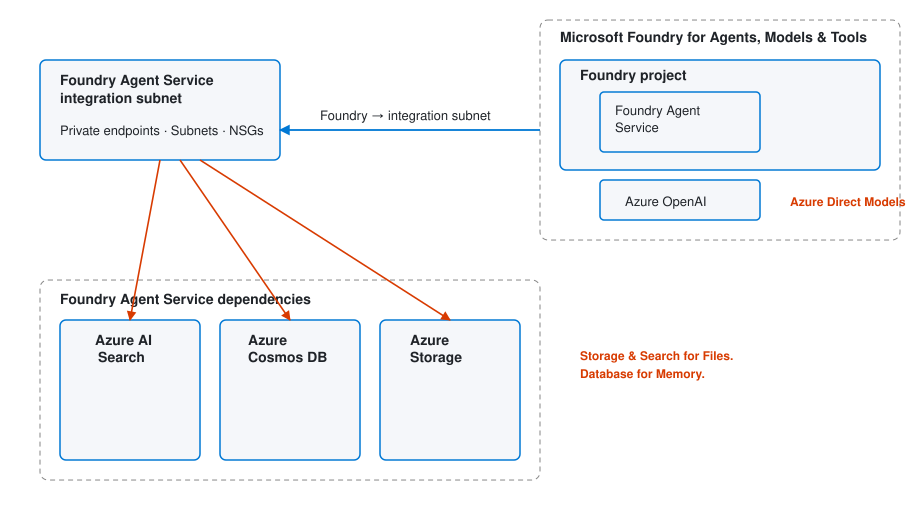
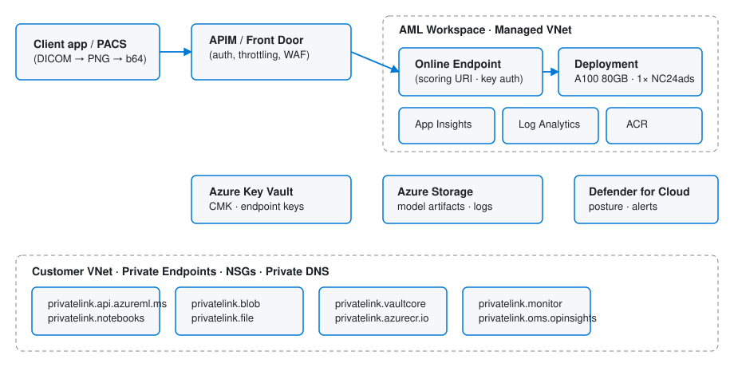

Deploying CXRReportGen on Azure
CXRReportGen is a multimodal Microsoft healthcare AI model that generates structured radiology reports from chest X-rays — frontal + lateral images, optional indication / technique / comparison text — and returns findings with bounding-box localizations.
What you'll do
- Stand up a Microsoft Foundry hub + project (the recommended container for healthcare-AI deployments; a plain Azure ML workspace also works since Foundry projects are AML workspaces under the hood).
- Request quota for the
Standard_NC24ads_A100_v4SKU. - Resolve the
CxrReportGenmodel from the AzureML system registry. - Deploy it to a Managed Online Endpoint (A100 80GB).
- Feed DICOM images via the official
healthcareai_toolkitclient (which handles DICOM→PNG→base64 for you) or your own converter. - Wire monitoring, private networking, and cost guardrails.
Model at a glance
| Aspect | Detail |
|---|---|
| Registry | Microsoft Foundry model catalog (system registry azureml) · model CxrReportGen · label latest. Browse at ai.azure.com → Models → "Microsoft Healthcare AI" filter. |
| Architecture | BiomedCLIP (image encoder) + Phi-3-mini-4k-instruct (text encoder) |
| Required SKU | Standard_NC24ads_A100_v4 (1× A100 80GB · 24 vCPU · 220 GiB) |
| Auth | Key or AAD token on the Managed Online Endpoint |
| Inputs (wire) | frontal_image, lateral_image (base64 JPG/PNG), indication, technique, comparison |
| Inputs (via toolkit) | Pass .dcm, .png, or .jpg file paths directly to CxrReportGenClient.submit(...) — DICOM conversion runs client-side automatically. |
| Outputs | List of [finding, [[x_min,y_min,x_max,y_max], …]] normalized to a center-cropped square |
| Typical latency | 2–6 s per study on 1× A100. Set request_timeout_ms=90000. |
30-second deploy
from azure.ai.ml import MLClient
from azure.ai.ml.entities import ManagedOnlineEndpoint, ManagedOnlineDeployment, OnlineRequestSettings
from azure.identity import DefaultAzureCredential
cred = DefaultAzureCredential()
model = MLClient(cred, registry_name="azureml").models.get(name="CxrReportGen", label="latest")
ml = MLClient.from_config(cred)
ml.online_endpoints.begin_create_or_update(ManagedOnlineEndpoint(name="cxr-endpoint")).result()
ml.online_deployments.begin_create_or_update(ManagedOnlineDeployment(
name="cxr-v1", endpoint_name="cxr-endpoint", model=model,
instance_type="Standard_NC24ads_A100_v4", instance_count=1,
request_settings=OnlineRequestSettings(request_timeout_ms=90000),
app_insights_enabled=True,
)).result()
End-to-End Walkthrough — from empty subscription to rendered report
Seventeen sequential steps. Total active work ~1 hour, plus 20–40 min wait for the deployment to roll out. Expected one-time cost: under $10 if you delete the endpoint at the end (one A100 hour ≈ $3.67 + ~$2 in Foundry hub dependencies + pennies for blob storage).
The journey at a glance
sequenceDiagram
autonumber
participant U as You (laptop)
participant CLI as az / Python
participant ARM as Azure Resource Manager
participant F as Foundry hub + project
participant SA as Blob Storage (dicom-input / cxr-reports)
participant R as Foundry model catalog (azureml registry)
participant EP as Managed Online Endpoint (A100)
U->>CLI: az login + set subscription
U->>ARM: az group create
U->>ARM: check / request A100 quota
ARM->>F: create hub (--kind hub) + project (--kind project)
ARM->>SA: create storage + containers + role assignment to project MI
U->>R: MLClient(registry_name="azureml").models.get("CxrReportGen")
U->>EP: create endpoint + deployment (A100, 1 instance)
Note over EP: 20–40 min provisioning
SA->>U: download frontal.dcm + lateral.dcm
U->>EP: invoke (toolkit passes .dcm directly)
EP-->>U: findings + bounding boxes
U->>SA: upload report.json + report.md + overlay PNG
Step 0 — Decide on names + region (5 min)
Pick a region where both the A100 v4 SKU and the model are available — East US, East US 2, West US 3, or Sweden Central are safe defaults. See the Prerequisites tab for the full region matrix.
# Export these once and reuse for the rest of the walkthrough
export SUB="00000000-0000-0000-0000-000000000000" # your subscription id
export LOC="eastus"
export RG="cxr-rg"
# Microsoft Foundry topology: a hub holds the shared infra, projects sit under it
export HUB="cxr-foundry-hub"
export PROJ="cxr-foundry-proj"
# Storage account for DICOM input + report output (must be globally unique, 3-24 lowercase)
export SA="cxrdicom$RANDOM"
export IN_CONTAINER="dicom-input"
export OUT_CONTAINER="cxr-reports"
# Endpoint + deployment names
export EP="cxr-endpoint-001"
export DEP="cxr-v1"
Step 1 — Install tooling (10 min)
# Azure CLI + ML extension (covers both AML and Microsoft Foundry)
brew install azure-cli # macOS — or use the MS installer on Win/Linux
az extension add -n ml --upgrade
# Python 3.10+ in a fresh venv
python3 -m venv .venv && source .venv/bin/activate
pip install --upgrade pip
pip install azure-ai-ml azure-ai-projects azure-identity azure-storage-blob \
pydicom pillow matplotlib numpy
pip install "healthcareai_toolkit @ git+https://github.com/microsoft/healthcareai-examples.git#subdirectory=package"
Why azure-ai-projects? It's the Foundry-native Python SDK — gives you AIProjectClient for browsing the project's model catalog, managing connections (including the blob storage you'll attach below), running evaluations, and reading tracing data. azure-ai-ml is still what creates the endpoint itself.
Step 2 — Sign in + select subscription (2 min)
az login # interactive browser flow
az account set -s "$SUB"
az account show --query "{name:name, id:id, tenantId:tenantId}" -o table
Step 3 — Create the resource group (30 s)
az group create -n "$RG" -l "$LOC" --tags purpose=cxrreportgen owner="$USER"
Step 4 — Verify (or request) A100 quota (2 min — up to 24 h if increase needed)
AML reserves an additional ~20% of cores for rolling upgrades, so a 24-vCPU SKU requires ≥29 vCPU of StandardNCADSA100v4Family quota to deploy a single instance.
az ml quota list -l "$LOC" --query "[?contains(name.value, 'NCADSA100v4')]" -o table
# If "limit" is 0 or <29, file a quota increase:
# Portal → Subscriptions → Usage + quotas → Request increase
# Provider: Machine Learning → Family: StandardNCADSA100v4Family → Region: $LOC
Step 5 — Create the Microsoft Foundry hub + project (5–7 min)
Foundry topology in one diagram: the hub owns shared infrastructure (workspace storage account, Key Vault, Application Insights + Log Analytics, and — on first deployment — an Azure Container Registry plus any Foundry Connections you add); projects sit underneath and are where you deploy models. A project IS an AML workspace at the API level — so everything the AML SDK / az ml can do still works.
# 1) Hub = shared infra. Auto-creates storage, KV, App Insights.
az ml workspace create --kind hub -g "$RG" -l "$LOC" -n "$HUB"
# 2) Project = your workspace, scoped under that hub
HUB_ID=$(az ml workspace show -g "$RG" -n "$HUB" --query id -o tsv)
az ml workspace create --kind project -g "$RG" -l "$LOC" -n "$PROJ" --hub-id "$HUB_ID"
# 3) Drop config.json pointing at the PROJECT (not the hub) so MLClient.from_config() works
cat > config.json <<EOF
{
"subscription_id": "$SUB",
"resource_group": "$RG",
"workspace_name": "$PROJ"
}
EOF
$PROJ listed under $HUB. The Model catalog tab is where CxrReportGen shows up — same artifact you'll resolve via the SDK in Step 6.
Prefer the older single-workspace model? Replace this step with az ml workspace create -g "$RG" -n cxr-mlw -l "$LOC" and point workspace_name at cxr-mlw. Every other step in this walkthrough is identical.
Step 5b — Create Blob Storage for DICOM input + report output (3 min)
The Foundry hub already auto-created a workspace storage account for model artifacts. Don't reuse it for PHI — create a dedicated, locked-down account for the DICOM pipeline so you can apply tighter access policies, lifecycle rules, and audit boundaries.
# 1) Dedicated storage account — TLS 1.2, no public blob access, HTTPS only
az storage account create -g "$RG" -l "$LOC" -n "$SA" \
--sku Standard_LRS --kind StorageV2 \
--min-tls-version TLS1_2 \
--allow-blob-public-access false \
--https-only true
# 2) Two containers: one for incoming DICOM studies, one for finished reports
SA_KEY=$(az storage account keys list -g "$RG" -n "$SA" --query "[0].value" -o tsv)
az storage container create -n "$IN_CONTAINER" --account-name "$SA" --account-key "$SA_KEY"
az storage container create -n "$OUT_CONTAINER" --account-name "$SA" --account-key "$SA_KEY"
# 3) Upload a study from local disk → dicom-input/study-001/{frontal,lateral}.dcm
az storage blob upload-batch -s ./my_study -d "$IN_CONTAINER/study-001" \
--account-name "$SA" --account-key "$SA_KEY" --pattern "*.dcm"
# 4) (Recommended) Attach the storage account to the Foundry PROJECT as a Connection
# so the endpoint + notebooks can use Managed Identity instead of a key.
az ml connection create --type azure_blob \
-g "$RG" --workspace-name "$PROJ" -n cxr-dicom-storage \
--target "https://${SA}.blob.core.windows.net/${IN_CONTAINER}" \
--credentials type=managed_identity
# 5) Grant the project's managed identity Storage Blob Data Contributor on the SA
MI=$(az ml workspace show -g "$RG" -n "$PROJ" --query identity.principal_id -o tsv)
SA_ID=$(az storage account show -g "$RG" -n "$SA" --query id -o tsv)
az role assignment create --assignee "$MI" \
--role "Storage Blob Data Contributor" --scope "$SA_ID"
dicom-input blobs to Cool tier after 30 days and to Archive after 180. The Cost Calculator models these tier transitions.
For high-volume PACS ingestion you'd usually layer the Azure Health Data Services DICOM service on top (DICOMweb STOW-RS endpoint, OHIF viewer compatibility, native DICOM tag de-id) — see the DICOM Ingestion tab.
Step 6 — Resolve the model from the Foundry catalog (10 s)
The same model the Foundry portal shows under "Microsoft Healthcare AI" lives in the azureml system registry. Either resolve it via the AML SDK (below) or browse and click "Deploy" inside ai.azure.com → your project → Model catalog → search "CxrReportGen".
from azure.ai.ml import MLClient
from azure.identity import DefaultAzureCredential
cred = DefaultAzureCredential()
registry = MLClient(cred, registry_name="azureml") # this IS the Foundry catalog
model = registry.models.get(name="CxrReportGen", label="latest")
print(f"{model.name} version={model.version} id={model.id}")
Step 7 — Create the endpoint (2 min)
from azure.ai.ml.entities import ManagedOnlineEndpoint
ml = MLClient.from_config(cred)
endpoint = ManagedOnlineEndpoint(
name="cxr-endpoint-001",
description="CXRReportGen — walkthrough",
auth_mode="key", # use "aad_token" if you're inside a private network
)
ml.online_endpoints.begin_create_or_update(endpoint).result()
Step 8 — Create the A100 deployment (20–40 min — set a timer)
from azure.ai.ml.entities import ManagedOnlineDeployment, OnlineRequestSettings
deployment = ManagedOnlineDeployment(
name="cxr-v1",
endpoint_name="cxr-endpoint-001",
model=model,
instance_type="Standard_NC24ads_A100_v4", # required SKU
instance_count=1,
request_settings=OnlineRequestSettings(request_timeout_ms=90000),
app_insights_enabled=True,
)
ml.online_deployments.begin_create_or_update(deployment).result()
# Route 100% of traffic to the new deployment
endpoint = ml.online_endpoints.get("cxr-endpoint-001")
endpoint.traffic = {"cxr-v1": 100}
ml.online_endpoints.begin_create_or_update(endpoint).result()
Creating → Updating → Succeeded. If it lands on Failed, jump to the Troubleshooting tab — 9 times out of 10 it's quota or container-image pull.
Step 9 — Capture the scoring URI + key (10 s)
export SCORING_URI=$(az ml online-endpoint show -n "$EP" --query scoring_uri -o tsv)
export SCORING_KEY=$(az ml online-endpoint get-credentials -n "$EP" --query primaryKey -o tsv)
echo "URI: $SCORING_URI"
Step 10 — Download the official sample images (1 min)
# azcopy is the canonical path; az storage blob download-batch also works
azcopy copy --recursive \
"https://azuremlexampledata.blob.core.windows.net/data/healthcare-ai/cxrreportgen-images/*" \
./images
Step 11 — Smoke-test with the toolkit one-liner (30 s)
from healthcareai_toolkit.clients import CxrReportGenClient
client = CxrReportGenClient(endpoint_name="cxr-endpoint-001")
result = client.submit(
frontal_image="./images/cxr_frontal.jpg",
lateral_image="./images/cxr_lateral.jpg",
indication="",
technique="",
comparison="None",
)
for finding, boxes in result[0]["output"]:
print(("*" if boxes else " "), finding)
Expected — the same five findings the sample notebook prints. If you see them, the deployment is healthy.
Step 12 — Run inference on your own DICOM (varies)
The toolkit accepts .dcm directly. It reads the pixel data via SimpleITK, applies 1st/99th-percentile windowing, converts to uint8, encodes a PNG, and base64-encodes the payload — see the DICOM Ingestion tab for the full source-level walkthrough.
12a — From local disk
from healthcareai_toolkit.clients import CxrReportGenClient
client = CxrReportGenClient(endpoint_name="cxr-endpoint-001")
result = client.submit(
frontal_image="my_study/frontal.dcm",
lateral_image="my_study/lateral.dcm",
indication="65F, shortness of breath x 3 days",
technique="PA and lateral chest radiograph",
comparison="None",
# Optional prior study for change detection:
# prior_image="prior_study/frontal.dcm",
# prior_report="Stable cardiomegaly. No effusion.",
)
findings = result[0]["output"]
12b — From Blob Storage (production pattern)
Pull DICOMs straight out of the $IN_CONTAINER container you created in Step 5b. Uses DefaultAzureCredential + the role assignment from Step 5b — no SAS tokens, no keys baked into code. Writes report.json + report.md + the overlay PNG back into $OUT_CONTAINER.
# Full script (download → invoke → render → upload):
python blob_inference.py \
--account "$SA" --input-container "$IN_CONTAINER" --output-container "$OUT_CONTAINER" \
--study-id study-001 \
--endpoint "$EP" \
--indication "65F, shortness of breath x 3 days" \
--technique "PA and lateral chest radiograph"
# Core of blob_inference.py — full source: assets/samples/blob_inference.py
import io, json, pathlib, tempfile
from azure.identity import DefaultAzureCredential
from azure.storage.blob import BlobServiceClient
from healthcareai_toolkit.clients import CxrReportGenClient
ACCOUNT, IN_CONT, OUT_CONT, STUDY = "cxrdicom001", "dicom-input", "cxr-reports", "study-001"
cred = DefaultAzureCredential()
svc = BlobServiceClient(f"https://{ACCOUNT}.blob.core.windows.net", credential=cred)
inp = svc.get_container_client(IN_CONT)
out = svc.get_container_client(OUT_CONT)
with tempfile.TemporaryDirectory() as tmp:
tmp = pathlib.Path(tmp)
for name in ("frontal.dcm", "lateral.dcm"):
(tmp / name).write_bytes(inp.get_blob_client(f"{STUDY}/{name}").download_blob().readall())
client = CxrReportGenClient(endpoint_name="cxr-endpoint-001")
result = client.submit(
frontal_image=str(tmp / "frontal.dcm"),
lateral_image=str(tmp / "lateral.dcm"),
indication="65F, shortness of breath x 3 days",
technique="PA and lateral chest radiograph",
comparison="None",
)
findings = result[0]["output"]
out.upload_blob(f"{STUDY}/findings.json", json.dumps(findings).encode(), overwrite=True)
Full script: blob_inference.py — handles arbitrary study IDs, optional priors, automatic make_report.py rendering, and uploads report.json / report.md / frontal_overlay.png back to the output container.
$IN_CONTAINER with a Microsoft.Storage.BlobCreated filter; route to an Azure Function (or Container Apps job) that calls blob_inference.py per new study. The function's managed identity inherits the same role assignment from Step 5b. See DICOM Ingestion → Ingestion patterns.
Step 13 — Render the final report (2 min)
Pull together the three deliverables a radiology workflow expects: a structured JSON record, a Markdown-rendered report, and an overlay PNG with the bounding boxes drawn back in original DICOM pixel space.
python make_report.py \
--frontal my_study/frontal.dcm \
--lateral my_study/lateral.dcm \
--findings findings.json \
--out-dir reports/study-001
# Writes: reports/study-001/report.json
# reports/study-001/report.md
# reports/study-001/frontal_overlay.png
Source: make_report.py — uses pydicom, Pillow, and matplotlib; no extra deps beyond what you installed in Step 1.
Example final report (Markdown render)
# Chest X-ray report — study-001
**Patient:** [redacted] **Acquired:** 2026-05-27 14:32 UTC
**Indication:** 65F, shortness of breath x 3 days
**Technique:** PA and lateral chest radiograph
**Comparison:** None
## Findings
1. The heart size is normal.
2. The aorta is tortuous. *(localized — frontal)*
3. A patchy infiltrate in the right lower lobe is associated with volume loss. *(localized — frontal)*
4. A small right pleural effusion is present. *(localized — frontal)*
5. The left hemithorax is grossly clear.

---
*Generated by CXRReportGen on cxr-endpoint-001 — research use only. Not for clinical diagnosis.*
Example structured JSON
{
"study_id": "study-001",
"model": { "name": "CxrReportGen", "endpoint": "cxr-endpoint-001", "version": "v440" },
"inputs": {
"indication": "65F, shortness of breath x 3 days",
"technique": "PA and lateral chest radiograph",
"comparison": "None"
},
"findings": [
{ "text": "The heart size is normal.", "boxes_original": [] },
{ "text": "The aorta is tortuous.",
"boxes_original": [[850, 510, 1300, 1720]] },
{ "text": "A patchy infiltrate in the right lower lobe is associated with volume loss.",
"boxes_original": [[240, 1010, 920, 1810]] },
{ "text": "A small right pleural effusion is present.",
"boxes_original": [[240, 1260, 880, 1920]] },
{ "text": "The left hemithorax is grossly clear.", "boxes_original": [] }
],
"generated_at": "2026-05-27T14:32:11Z"
}
The boxes_original coordinates are already rescaled from the model's center-cropped square back to the original DICOM pixel dimensions — see Test the Endpoint for the rescale function. Drop the JSON into a FHIR DiagnosticReport resource (see the DICOM tab) to write it back to your EHR.
Step 14 — Sanity check the cost (1 min)
Open the Cost Calculator with your daily study volume, retention policy, and region. For a single-instance East US deployment running 24×7, expect ~$2,700–$3,200/month before storage and AHDS.
Step 15 — Production hardening (separate workstreams)
Before this serves real workloads, walk these tabs:
- Networking & Security — managed VNet, private endpoint, NSG, ExpressRoute.
- Compliance & RAI — PHI scrub, HIPAA BAA, data residency, model-card disclosure.
- Monitoring & Ops — App Insights dashboards, autoscale rules, blue/green rollouts.
- DICOM Ingestion — PACS / DICOMweb / FHIR write-back wiring.
Step 16 — Clean up (30 s — do this when you're done experimenting!)
# Stop the A100 meter (project + storage stay)
az ml online-endpoint delete -n "$EP" -y
# Or nuke the project but keep the hub (faster re-deploy later)
az ml workspace delete -g "$RG" -n "$PROJ" -y --permanently-delete
# Or burn everything to the ground — hub, project, storage, App Insights, KV, ACR
az group delete -n "$RG" -y --no-wait
All-in-one single file, empty subscription to first report
ScriptOne .sh file that runs every step of the End-to-End Walkthrough back-to-back, in order, with narrated terminal output at every stage. 22 steps, one process: resource group → Foundry hub → Foundry project → locked-down Blob Storage → RBAC + Foundry Connection → A100 endpoint → DICOM upload → inference → rendered report uploaded back to blob.
bash deploy_cxrreportgen_end_to_end.sh and walk away from. It is idempotent (re-runs reuse existing resources), embeds the Python steps via heredocs (no companion files), and emits a status banner for every step that explains what is happening with the network, storage, IAM, and the model serving layer.
Quick start
# 1. Sign in
az login
# 2. Download (raw) and run
curl -sSLO https://patmeh1.github.io/cxrreportgen-deploy-guide/assets/samples/deploy_cxrreportgen_end_to_end.sh
chmod +x deploy_cxrreportgen_end_to_end.sh
bash deploy_cxrreportgen_end_to_end.sh
# Or run with your own DICOMs:
DICOM_FRONTAL=./my_study/frontal.dcm \
DICOM_LATERAL=./my_study/lateral.dcm \
bash deploy_cxrreportgen_end_to_end.sh
Download deploy_cxrreportgen_end_to_end.sh View on GitHub
What gets printed (sample output)
STEP 7/22 Create Microsoft Foundry HUB
Foundry topology:
hub = shared infra (storage, KV, App Insights, Container Registry,
connections, RBAC root). One hub per team is typical.
project = where your endpoint actually lives. CxrReportGen deployment
attaches to the project.
'--kind hub' auto-provisions a full dependency stack inside this RG:
- workspace storage account (model artifacts, run logs)
- Azure Key Vault (endpoint keys, connection secrets)
- Application Insights (request traces, custom metrics)
- Log Analytics workspace (backing store for App Insights)
Azure Container Registry (which holds the CxrReportGen model image) is
auto-created on the first deployment (Step 16) unless you pre-attach an
existing one with --container-registry. First hub create takes 3-5 min.
Foundry hub: cxr-foundry-hub
Hub resource id: /subscriptions/.../resourceGroups/cxr-rg/providers/...
Auto-provisioned dependencies now live in cxr-rg:
Name Type
------------------------------ -----------------------------------------
cxrfoundryhub Microsoft.MachineLearningServices/workspaces
cxrfoundryhubkv... Microsoft.KeyVault/vaults
cxrfoundryhubst... Microsoft.Storage/storageAccounts
cxrfoundryhubin... Microsoft.Insights/components
cxrfoundryhubla... Microsoft.OperationalInsights/workspaces
22 steps at a glance
Every step prints a banner like the one above. Cross-reference column shows where to find a deeper explanation in this guide.
| # | Step | What it does | Cross-reference |
|---|---|---|---|
| 1 | Pre-flight | Verify az, python3, jq; install az ml extension. | Prerequisites |
| 2 | Sign-in | Confirm az login; set active subscription. | Prerequisites |
| 3 | Config print | Echo every variable so you can Ctrl-C if anything is wrong. | — |
| 4 | Resource Providers | Register MachineLearningServices, Storage, KeyVault, ContainerRegistry, Insights, Authorization, Network, etc. | Prerequisites |
| 5 | Resource Group | az group create — single boundary for cleanup. | Step 4 |
| 6 | A100 quota | Query NCADSA100v4 family usage in the chosen region; warn if < 24 vCPUs. | Prerequisites |
| 7 | Foundry HUB | az ml workspace create --kind hub — auto-provisions Storage, Key Vault, Application Insights + Log Analytics. ACR appears on first deployment. | Step 5 |
| 8 | Foundry PROJECT | --kind project linked to the hub; drops config.json for MLClient.from_config(). | Step 5 |
| 9 | Storage Account | Dedicated locked-down StorageV2 account for DICOMs (TLS1.2, no public blob, HTTPS only). | Step 5b |
| 10 | Containers | dicom-input + cxr-reports. | Step 5b |
| 11 | RBAC | Grant Storage Blob Data Contributor to the project MI and to the operator running the script. | Networking & Security |
| 12 | Foundry Connection | az ml connection create --type azure_blob with type=managed_identity. | Step 5b |
| 13 | Python venv | Create .venv, install azure-ai-ml, azure-ai-projects, azure-storage-blob, healthcareai_toolkit, pydicom, SimpleITK, pillow. | Step 1 |
| 14 | Resolve model | MLClient(registry_name="azureml").models.get("CxrReportGen", label="latest"). | Step 6 |
| 15 | Create Endpoint | DNS-addressable shell (no compute yet); auth_mode=key. | Deploy |
| 16 | Create Deployment (~20-40 min) | Provision A100, pull container, mount model, wire probes, route 100% traffic. | Deploy |
| 17 | Print URL + Key | Cache scoring_uri + key to .endpoint.env. | Test the Endpoint |
| 18 | Sample DICOMs | Use yours via DICOM_FRONTAL / DICOM_LATERAL, or synthesise a 1024×1024 phantom with pydicom. | DICOM Ingestion |
| 19 | Upload to blob | az storage blob upload-batch --auth-mode login (no keys on wire). | Step 12b |
| 20 | Inference | Single Python block: download → invoke → render JSON/MD/overlay → upload. | Step 12b |
| 21 | Verify | az storage blob list on the output container. | — |
| 22 | Summary + cleanup | Print Foundry portal link, endpoint URL, blob URL, and the cleanup command. | Step 16 |
Auto-provisioned dependencies (the full Azure footprint)
The script intentionally relies on Azure’s built-in auto-provisioning so you don’t need to wire up dependencies by hand. Here is exactly what lands in your resource group by the end of Step 22, who creates each component, and what it is for:
| Component | Azure resource type | Created by | Step | Purpose |
|---|---|---|---|---|
| Foundry Hub | Microsoft.MachineLearningServices/workspaces (kind=Hub) |
You — az ml workspace create --kind hub |
7 | Shared infra root for the project: holds connections, RBAC, and the auto-provisioned dependency stack below. |
| Foundry Project | Microsoft.MachineLearningServices/workspaces (kind=Project) |
You — az ml workspace create --kind project --hub-id |
8 | Where the endpoint actually lives. A project IS an AML workspace, so the AML SDK and az ml work against it unchanged. |
| Workspace Storage Account | Microsoft.Storage/storageAccounts |
Hub auto-provision | 7 | Holds model artifacts, run logs, snapshots, and prompt-flow data. Separate from the dedicated DICOM storage account you create in Step 9. |
| Azure Key Vault | Microsoft.KeyVault/vaults |
Hub auto-provision | 7 | Stores endpoint primary/secondary keys, the storage-account connection string, and any other secrets the workspace needs. |
| Application Insights | Microsoft.Insights/components |
Hub auto-provision | 7 | Telemetry sink for the endpoint: request rate, latency percentiles, failures, custom metrics, server-side traces. |
| Log Analytics Workspace | Microsoft.OperationalInsights/workspaces |
Hub auto-provision (workspace-based App Insights requires it) | 7 | Backing store for App Insights data. Lets you write KQL against endpoint logs and configure Azure Monitor alerts. |
| Azure Container Registry | Microsoft.ContainerRegistry/registries |
AML auto-creates on first deployment (or pre-attach with --container-registry) |
16 | Hosts the CxrReportGen serving container image (~15 GB). Subsequent deployments to this hub/project re-use the same ACR. |
| DICOM Storage Account | Microsoft.Storage/storageAccounts (StorageV2, TLS1.2, HTTPS only, no public blob) |
You — az storage account create |
9 | Dedicated locked-down account separate from the workspace storage. Holds the dicom-input and cxr-reports containers. |
| Blob Containers | blobs inside the DICOM storage account | You — az storage container create |
10 | dicom-input (uploaded studies) and cxr-reports (generated JSON/Markdown/PNG overlays). |
| RBAC Role Assignments | Microsoft.Authorization/roleAssignments |
You — az role assignment create |
11 | Storage Blob Data Contributor granted to (a) the project’s managed identity and (b) the operator running the script. |
| Foundry Connection | azure_blob connection on the project |
You — az ml connection create --type azure_blob |
12 | Wires the DICOM container into the project with type=managed_identity auth — no keys on disk. |
| Managed Online Endpoint | Microsoft.MachineLearningServices/workspaces/onlineEndpoints |
You via SDK | 15 | DNS-addressable scoring URI with key auth. No compute attached yet — this is just the shell. |
| Online Deployment | Microsoft.MachineLearningServices/workspaces/onlineEndpoints/deployments on Standard_NC24ads_A100_v4 |
You via SDK | 16 | The actual A100 80 GB worker. Pulls the model image from ACR, mounts the model files, and routes 100% traffic. |
Environment variables you can override
| Variable | Default | Notes |
|---|---|---|
SUB | active subscription | Subscription id (UUID). |
LOC | eastus | Region with A100 v4 availability. eastus2, westus3, swedencentral also work. |
RG | cxr-rg | Resource group name. |
HUB / PROJ | cxr-foundry-hub / cxr-foundry-proj | Foundry hub + project names. |
SA | cxrdicom$RANDOM | Storage account (must be globally unique, 3-24 lowercase alphanum). |
IN_CONTAINER / OUT_CONTAINER | dicom-input / cxr-reports | Blob container names. |
EP / DEP | cxr-endpoint-001 / cxr-v1 | Endpoint + deployment names. |
SKU | Standard_NC24ads_A100_v4 | GPU SKU. CxrReportGen requires A100 80GB. |
STUDY_ID | study-001 | Prefix inside both blob containers. |
DICOM_FRONTAL | (empty → synthesise) | Path to your frontal .dcm. Bring this for a real report. |
DICOM_LATERAL | (empty → synthesise) | Path to your lateral .dcm. |
WORKDIR | ./cxr-work | Where the venv, config.json, and samples land. |
The full script (reading copy)
Source is also available at assets/samples/deploy_cxrreportgen_end_to_end.sh. The version below is the exact file shipped with this guide.
#!/usr/bin/env bash
# ============================================================================
# deploy_cxrreportgen_end_to_end.sh
# ---------------------------------------------------------------------------
# Empty Azure subscription -> finished radiology report in Blob Storage.
# Stands up Microsoft Foundry hub + project, dedicated locked-down storage,
# RBAC, the CxrReportGen managed online endpoint (A100), and runs the
# full inference pipeline end-to-end. Single file, no companions.
#
# Usage: bash deploy_cxrreportgen_end_to_end.sh
# Override: SUB=... LOC=... RG=... DICOM_FRONTAL=./mine.dcm bash ...
# Cleanup: az group delete -n "$RG" -y --no-wait
#
# Expected cost: ~$8-10 if you delete the endpoint immediately after the
# first successful inference. The A100 VM is the only meaningful meter
# (~$3.67/hour list); storage + KV + App Insights add up to pennies.
# ============================================================================
set -euo pipefail
# ─── inputs (env var overrides supported) ──────────────────────────────────
SUB="${SUB:-$(az account show --query id -o tsv 2>/dev/null || true)}"
LOC="${LOC:-eastus}"
RG="${RG:-cxr-rg}"
HUB="${HUB:-cxr-foundry-hub}"
PROJ="${PROJ:-cxr-foundry-proj}"
SA="${SA:-cxrdicom$RANDOM}"
IN_CONTAINER="${IN_CONTAINER:-dicom-input}"
OUT_CONTAINER="${OUT_CONTAINER:-cxr-reports}"
EP="${EP:-cxr-endpoint-001}"
DEP="${DEP:-cxr-v1}"
SKU="${SKU:-Standard_NC24ads_A100_v4}"
STUDY_ID="${STUDY_ID:-study-001}"
DICOM_FRONTAL="${DICOM_FRONTAL:-}"
DICOM_LATERAL="${DICOM_LATERAL:-}"
WORKDIR="${WORKDIR:-$(pwd)/cxr-work}"
mkdir -p "$WORKDIR"
export SUB LOC RG HUB PROJ SA IN_CONTAINER OUT_CONTAINER EP DEP SKU STUDY_ID DICOM_FRONTAL DICOM_LATERAL WORKDIR
# ─── pretty printing ───────────────────────────────────────────────────────
TOTAL=22
__b=$'\033[1m'; __d=$'\033[2m'; __c=$'\033[36m'; __g=$'\033[32m'
__y=$'\033[33m'; __r=$'\033[31m'; __0=$'\033[0m'
step() {
local n="$1"; shift
printf '\n%s%s════════════════════════════════════════════════════════════%s\n' "$__c" "$__b" "$__0"
printf '%s%s STEP %2d/%d %s%s\n' "$__c" "$__b" "$n" "$TOTAL" "$*" "$__0"
printf '%s%s════════════════════════════════════════════════════════════%s\n' "$__c" "$__b" "$__0"
}
note() { printf ' %s· %s%s\n' "$__d" "$*" "$__0"; }
ok() { printf ' %s✓ %s%s\n' "$__g" "$*" "$__0"; }
warn() { printf ' %s! %s%s\n' "$__y" "$*" "$__0"; }
die() { printf ' %s✗ %s%s\n' "$__r" "$*" "$__0"; exit 1; }
# ============================================================================
step 1 "Pre-flight — verify CLI tools"
# ============================================================================
note "Need: az (>=2.50), python3 (>=3.10), jq, curl. We will (re)install the"
note "azure-cli 'ml' extension which provides Foundry hub/project commands."
for c in az python3 jq curl; do command -v "$c" >/dev/null || die "missing dependency: $c"; done
ok "az -> $(az version --query '\"azure-cli\"' -o tsv 2>/dev/null)"
ok "python3 -> $(python3 -V 2>&1)"
ok "jq -> $(jq --version)"
az extension add -n ml --upgrade --only-show-errors >/dev/null
ok "az ml -> $(az extension show -n ml --query version -o tsv)"
# ============================================================================
step 2 "Verify Azure sign-in + subscription"
# ============================================================================
[ -n "$SUB" ] || die "Not logged in. Run: az login"
note "Setting active subscription so every subsequent az command targets the"
note "same place; az login can attach multiple subs and the active one is sticky."
az account set --subscription "$SUB"
ok "Subscription: $(az account show --query '[name, id]' -o tsv | xargs)"
ok "Tenant: $(az account show --query tenantId -o tsv)"
ok "Signed-in: $(az account show --query user.name -o tsv)"
# ============================================================================
step 3 "Print effective configuration (sanity check)"
# ============================================================================
cat <<EOF
┌─────────────────────────────────────────────────────────────────┐
│ region : $LOC
│ resource group : $RG
│ Foundry hub : $HUB
│ Foundry project : $PROJ
│ storage account : $SA
│ in container : $IN_CONTAINER
│ out container : $OUT_CONTAINER
│ endpoint name : $EP deployment: $DEP
│ GPU SKU : $SKU (~\$3.67/hour list)
│ study id : $STUDY_ID
│ working dir : $WORKDIR
└─────────────────────────────────────────────────────────────────┘
EOF
note "Wrong? Ctrl-C now, re-export the env vars, and re-run."
sleep 2
# ============================================================================
step 4 "Register required Azure Resource Providers"
# ============================================================================
note "On a brand new subscription, these are NOT all registered by default."
note "Skipping this step would let later 'az' commands fail with the very"
note "confusing 'subscription is not registered to use namespace ...' error."
for ns in Microsoft.MachineLearningServices Microsoft.Storage Microsoft.KeyVault \
Microsoft.ContainerRegistry Microsoft.Insights Microsoft.OperationalInsights \
Microsoft.CognitiveServices Microsoft.Authorization Microsoft.Network; do
state=$(az provider show -n "$ns" --query registrationState -o tsv 2>/dev/null || echo "NotRegistered")
if [ "$state" != "Registered" ]; then
note "registering $ns (was $state) ..."
az provider register -n "$ns" --wait --only-show-errors
fi
ok "$ns: $(az provider show -n "$ns" --query registrationState -o tsv)"
done
# ============================================================================
step 5 "Create / reuse the resource group"
# ============================================================================
note "Cost meter starts here. Everything we create lives inside this RG so the"
note "tear-down is one command at the end (az group delete -n \$RG -y --no-wait)."
if az group show -n "$RG" >/dev/null 2>&1; then
warn "RG '$RG' already exists in $(az group show -n "$RG" --query location -o tsv) — reusing."
else
az group create -n "$RG" -l "$LOC" --only-show-errors >/dev/null
fi
ok "Resource group ready: $RG ($LOC)"
# ============================================================================
step 6 "Quota check — NCadsA100v4 family"
# ============================================================================
note "CxrReportGen ships a container that serves on a single NVIDIA A100 80GB."
note "Region quota lives under 'Standard NCADSA100v4 Family vCPUs' and is *zero*"
note "on every new subscription. The deployment in Step 16 will hard-fail if the"
note "family quota is below 24 vCPUs."
USAGE=$(az ml compute list-usage --location "$LOC" \
--query "[?contains(name.value,'NCADSA100v4')].{n:name.localizedValue,used:currentValue,lim:limit}" -o json 2>/dev/null || echo "[]")
echo "$USAGE" | jq -r '.[] | " · \(.n): used \(.used) / quota \(.lim)"' || true
LIMIT=$(echo "$USAGE" | jq -r '[.[].lim] | first // 0')
if [ "${LIMIT:-0}" -lt 24 ]; then
warn "A100 v4 family quota looks insufficient (need >=24 vCPUs)."
warn "Request a bump: Azure Portal -> Subscriptions -> Usage + quotas, or"
warn " az support tickets create ... (see Prerequisites tab on the guide site)."
warn "Continuing anyway — Step 16 will fail loudly if quota is the blocker."
else
ok "A100 v4 family quota: $LIMIT vCPUs (>=24 required)"
fi
# ============================================================================
step 7 "Create Microsoft Foundry HUB"
# ============================================================================
note "Foundry topology:"
note " hub = shared infra (storage, KV, App Insights, Container Registry,"
note " connections, RBAC root). One hub per team is typical."
note " project = where your endpoint actually lives. CxrReportGen deployment"
note " attaches to the project."
note ""
note "'--kind hub' auto-provisions a full dependency stack inside this RG:"
note " - workspace storage account (model artifacts, run logs)"
note " - Azure Key Vault (endpoint keys, connection secrets)"
note " - Application Insights (request traces, custom metrics)"
note " - Log Analytics workspace (backing store for App Insights)"
note "Azure Container Registry (which holds the CxrReportGen model image) is"
note "auto-created on the first deployment (Step 16) unless you pre-attach an"
note "existing one with --container-registry. First hub create takes 3-5 min."
if az ml workspace show -g "$RG" -n "$HUB" >/dev/null 2>&1; then
warn "Hub '$HUB' already exists — reusing."
else
az ml workspace create --kind hub -g "$RG" -l "$LOC" -n "$HUB" --only-show-errors >/dev/null
fi
HUB_ID=$(az ml workspace show -g "$RG" -n "$HUB" --query id -o tsv)
ok "Foundry hub: $HUB"
ok "Hub resource id: $HUB_ID"
note "Auto-provisioned dependencies now live in $RG:"
az resource list -g "$RG" --query "[].{name:name, type:type}" -o table 2>/dev/null | head -20 || true
# ============================================================================
step 8 "Create Foundry PROJECT under the hub + write config.json"
# ============================================================================
note "A Foundry project IS an Azure ML workspace at the API level — same SDK,"
note "same 'az ml' commands. The '--hub-id' link is what makes ai.azure.com"
note "render it under the hub. config.json points downstream Python at the"
note "PROJECT (not the hub), so MLClient.from_config() works without args."
if az ml workspace show -g "$RG" -n "$PROJ" >/dev/null 2>&1; then
warn "Project '$PROJ' already exists — reusing."
else
az ml workspace create --kind project -g "$RG" -l "$LOC" -n "$PROJ" \
--hub-id "$HUB_ID" --only-show-errors >/dev/null
fi
ok "Foundry project: $PROJ"
cat > "$WORKDIR/config.json" <<EOF
{
"subscription_id": "$SUB",
"resource_group": "$RG",
"workspace_name": "$PROJ"
}
EOF
ok "config.json -> $WORKDIR/config.json"
# ============================================================================
step 9 "Create dedicated Blob Storage account for the DICOM pipeline"
# ============================================================================
note "Why a NEW account instead of reusing the hub's auto-created storage?"
note " - keeps PHI-bearing DICOMs separate from model artifacts (audit / IAM)"
note " - lets you tune lifecycle rules, CMK, and soft-delete for clinical data"
note " - simpler to disable / wipe at end-of-study"
note ""
note "Account hardening flags we set on creation:"
note " --sku Standard_LRS cheapest tier; switch to ZRS for HA"
note " --kind StorageV2 only kind supporting blob lifecycle + CMK"
note " --min-tls-version TLS1_2 rejects legacy clients"
note " --allow-blob-public-access false no anonymous URLs, ever"
note " --https-only true rejects http://"
note ""
note "Networking: account is public-endpoint by default. For locked-down deploys"
note "switch to a Private Endpoint + service tag 'MachineLearningServices' on"
note "the endpoint's VNet (see Networking & Security tab on the guide site)."
if az storage account show -g "$RG" -n "$SA" >/dev/null 2>&1; then
warn "Storage account '$SA' already exists — reusing."
else
az storage account create -g "$RG" -l "$LOC" -n "$SA" \
--sku Standard_LRS --kind StorageV2 \
--min-tls-version TLS1_2 \
--allow-blob-public-access false \
--https-only true --only-show-errors >/dev/null
fi
ok "Storage account: $SA (sku=$(az storage account show -g "$RG" -n "$SA" --query sku.name -o tsv))"
# ============================================================================
step 10 "Create input + output blob containers"
# ============================================================================
note "Container layout we will use:"
note " ${IN_CONTAINER}/<study-id>/{frontal,lateral}.dcm <- DICOMs in"
note " ${OUT_CONTAINER}/<study-id>/{report.json,report.md,frontal_overlay.png}"
SA_KEY=$(az storage account keys list -g "$RG" -n "$SA" --query "[0].value" -o tsv)
for c in "$IN_CONTAINER" "$OUT_CONTAINER"; do
az storage container create -n "$c" --account-name "$SA" --account-key "$SA_KEY" \
--only-show-errors >/dev/null
ok "container ready: $c"
done
# ============================================================================
step 11 "Grant 'Storage Blob Data Contributor' RBAC (no keys in code)"
# ============================================================================
note "Best practice: never bake the account key into inference code. The Foundry"
note "project already has a system-assigned managed identity (MI). We grant it"
note "Storage Blob Data Contributor on the storage account so DefaultAzureCredential"
note "inside the endpoint code can read DICOMs and write reports with no secret"
note "in source. We also self-grant so the local Python here can do the same."
MI=$(az ml workspace show -g "$RG" -n "$PROJ" --query identity.principal_id -o tsv)
SA_ID=$(az storage account show -g "$RG" -n "$SA" --query id -o tsv)
if az role assignment list --assignee "$MI" --scope "$SA_ID" --role "Storage Blob Data Contributor" -o tsv 2>/dev/null | grep -q .; then
ok "role assignment for project MI already in place"
else
az role assignment create --assignee "$MI" --role "Storage Blob Data Contributor" \
--scope "$SA_ID" --only-show-errors >/dev/null
ok "Storage Blob Data Contributor granted to project MI ($MI)"
fi
ME=$(az ad signed-in-user show --query id -o tsv 2>/dev/null || true)
if [ -n "$ME" ]; then
az role assignment create --assignee "$ME" --role "Storage Blob Data Contributor" \
--scope "$SA_ID" --only-show-errors >/dev/null 2>&1 || true
ok "self-RBAC granted to $(az ad signed-in-user show --query userPrincipalName -o tsv)"
fi
note "RBAC propagation can take 30-60 seconds — sleeping to avoid 403s on the"
note "first blob upload below."
sleep 45
# ============================================================================
step 12 "Create Foundry Connection that wraps the storage account"
# ============================================================================
note "Foundry Connections are the recommended way to point a project at outside"
note "resources (blob, OpenAI, Key Vault, search, ...). They show up in the"
note "Foundry portal under Project -> Connected resources and can be selected"
note "from notebooks via the azure-ai-projects SDK. Using managed_identity here"
note "means the project's MI (the one we just RBAC'd) is what authenticates."
if az ml connection show -g "$RG" --workspace-name "$PROJ" -n cxr-dicom-storage >/dev/null 2>&1; then
warn "Connection 'cxr-dicom-storage' already exists — reusing."
else
az ml connection create --type azure_blob -g "$RG" --workspace-name "$PROJ" \
-n cxr-dicom-storage \
--target "https://${SA}.blob.core.windows.net/${IN_CONTAINER}" \
--credentials type=managed_identity --only-show-errors >/dev/null
fi
ok "Foundry Connection: cxr-dicom-storage -> https://${SA}.blob.core.windows.net/${IN_CONTAINER}"
# ============================================================================
step 13 "Create Python venv + install client packages"
# ============================================================================
note "Pin to a venv so we don't pollute the system interpreter. The set:"
note " azure-identity DefaultAzureCredential / AzureCliCredential"
note " azure-ai-ml managed online endpoints + model resolution"
note " azure-ai-projects Foundry-native helpers"
note " azure-storage-blob blob I/O for DICOM in / report out"
note " healthcareai_toolkit CxrReportGenClient + DICOM windowing"
note " pydicom, SimpleITK DICOM read/write"
note " numpy, pillow overlay rendering"
VENV="$WORKDIR/.venv"
[ -d "$VENV" ] || python3 -m venv "$VENV"
# shellcheck disable=SC1091
source "$VENV/bin/activate"
python -m pip install --upgrade pip --quiet
pip install --quiet \
"azure-identity>=1.15" "azure-ai-ml>=1.18" "azure-ai-projects>=1.0.0b6" \
"azure-storage-blob>=12.20" "numpy" "pillow" "pydicom>=2.4" "SimpleITK>=2.3" \
"git+https://github.com/microsoft/healthcareai-examples.git#subdirectory=package"
ok "venv: $VENV ($(python -V))"
# ============================================================================
step 14 "Resolve CxrReportGen from the Foundry model catalog"
# ============================================================================
note "The 'azureml' system registry is the backing store for Foundry's model"
note "catalog. The AML SDK is the lingua franca; the model returned here is"
note "the same artifact you would see by clicking CxrReportGen in ai.azure.com."
python3 - <<'PYEOF'
import os
from azure.identity import AzureCliCredential
from azure.ai.ml import MLClient
cred = AzureCliCredential()
reg = MLClient(cred, registry_name="azureml")
m = reg.models.get(name="CxrReportGen", label="latest")
print(f" ✓ name = {m.name}")
print(f" ✓ version = {m.version}")
print(f" ✓ id = {m.id}")
desc = (m.description or "").splitlines()
if desc: print(f" ✓ description = {desc[0][:90]}")
PYEOF
# ============================================================================
step 15 "Create managed online ENDPOINT (control plane only)"
# ============================================================================
note "An endpoint is a DNS-addressable URL + auth key + traffic table. It has"
note "no compute yet — the deployment in the next step adds the A100 instance."
note "Auth modes:"
note " key (default here) primary/secondary keys, simple to call from curl"
note " aml_token AAD bearer tokens (recommended for production)"
python3 - <<'PYEOF'
import os
from azure.identity import AzureCliCredential
from azure.ai.ml import MLClient
from azure.ai.ml.entities import ManagedOnlineEndpoint
cred = AzureCliCredential()
mlc = MLClient(cred, os.environ["SUB"], os.environ["RG"], os.environ["PROJ"])
ep_name = os.environ["EP"]
try:
ep = mlc.online_endpoints.get(ep_name)
print(f" ! endpoint '{ep_name}' already exists (state={ep.provisioning_state})")
except Exception:
ep = ManagedOnlineEndpoint(name=ep_name, auth_mode="key",
description="CxrReportGen managed online endpoint")
mlc.online_endpoints.begin_create_or_update(ep).result()
print(f" ✓ endpoint created: {ep_name}")
PYEOF
# ============================================================================
step 16 "Create A100 DEPLOYMENT (~20-40 min — coffee break)"
# ============================================================================
note "This is the long one. The SDK call:"
note " 1. tells the AML control plane to provision Standard_NC24ads_A100_v4"
note " 2. pulls the CxrReportGen serving container (~15 GB) into a managed"
note " Azure Container Registry (auto-created in this RG on first deploy)"
note " 3. mounts the model files, starts the worker, waits for /health to be 200"
note " 4. routes 100% traffic to the new deployment"
note ""
note "The cost meter starts the moment the VM is provisioned (~\$3.67/hour)."
note "Liveness probe is generous (10-min initial delay) because the first model"
note "load reads ~6 GB of weights into HBM."
python3 - <<'PYEOF'
import os, time
from azure.identity import AzureCliCredential
from azure.ai.ml import MLClient
from azure.ai.ml.entities import ManagedOnlineDeployment, ProbeSettings, OnlineRequestSettings
cred = AzureCliCredential()
mlc = MLClient(cred, os.environ["SUB"], os.environ["RG"], os.environ["PROJ"])
reg = MLClient(cred, registry_name="azureml")
model = reg.models.get(name="CxrReportGen", label="latest")
dep = ManagedOnlineDeployment(
name=os.environ["DEP"],
endpoint_name=os.environ["EP"],
model=model.id,
instance_type=os.environ["SKU"],
instance_count=1,
request_settings=OnlineRequestSettings(
request_timeout_ms=90000,
max_concurrent_requests_per_instance=1,
),
liveness_probe=ProbeSettings(initial_delay=600, period=60, timeout=30, failure_threshold=30),
)
t0 = time.time()
print(" · submitting deployment (this blocks; SDK polls every ~30 s)...")
mlc.online_deployments.begin_create_or_update(dep).result()
print(f" ✓ deployment online after {(time.time()-t0)/60:.1f} min")
ep = mlc.online_endpoints.get(os.environ["EP"])
ep.traffic = {os.environ["DEP"]: 100}
mlc.online_endpoints.begin_create_or_update(ep).result()
print(f" ✓ traffic routing: 100% -> {os.environ['DEP']}")
PYEOF
# ============================================================================
step 17 "Print endpoint URL + key (cached to disk for later runs)"
# ============================================================================
EP_URL=$(az ml online-endpoint show -g "$RG" --workspace-name "$PROJ" -n "$EP" --query scoring_uri -o tsv)
EP_KEY=$(az ml online-endpoint get-credentials -g "$RG" --workspace-name "$PROJ" -n "$EP" --query primaryKey -o tsv)
ok "scoring_uri: $EP_URL"
ok "primary_key: ${EP_KEY:0:6}...${EP_KEY: -4} (saved to $WORKDIR/.endpoint.env)"
cat > "$WORKDIR/.endpoint.env" <<EOF
export EP_URL='$EP_URL'
export EP_KEY='$EP_KEY'
EOF
chmod 600 "$WORKDIR/.endpoint.env"
# ============================================================================
step 18 "Materialise sample DICOM files (or use what you provided)"
# ============================================================================
note "If you set DICOM_FRONTAL=/path/to/frontal.dcm and DICOM_LATERAL=/path/...,"
note "we upload those. Otherwise we synthesize 1024x1024 monochrome DICOMs with"
note "pydicom — useful for plumbing tests but the report content won't be"
note "clinically meaningful. Bring real CXR DICOMs for real outputs."
SAMPLES_DIR="$WORKDIR/samples"; mkdir -p "$SAMPLES_DIR"
if [ -n "$DICOM_FRONTAL" ] && [ -f "$DICOM_FRONTAL" ]; then
cp "$DICOM_FRONTAL" "$SAMPLES_DIR/frontal.dcm"
ok "using your frontal: $DICOM_FRONTAL"
else
warn "DICOM_FRONTAL not provided — synthesizing a phantom for plumbing test."
python3 - <<'PYEOF'
import os, numpy as np, pydicom
from pydicom.dataset import FileDataset, FileMetaDataset
from pydicom.uid import generate_uid, ExplicitVRLittleEndian
def synth(path, seed):
rng = np.random.default_rng(seed); rows = cols = 1024
yy, xx = np.indices((rows, cols))
pix = ((np.sqrt((xx-512)**2 + (yy-512)**2)/512*3000)
+ rng.normal(0, 80, (rows, cols))).clip(0, 4095).astype(np.uint16)
pix[200:800, 200:480] = 2200 # left lung
pix[200:800, 544:824] = 2400 # right lung
meta = FileMetaDataset()
meta.MediaStorageSOPClassUID = "1.2.840.10008.5.1.4.1.1.1.1"
meta.MediaStorageSOPInstanceUID = generate_uid()
meta.TransferSyntaxUID = ExplicitVRLittleEndian
ds = FileDataset(path, {}, file_meta=meta, preamble=b"\0"*128)
ds.PatientName="Synthetic^Demo"; ds.PatientID="DEMO001"
ds.Modality="DX"; ds.StudyInstanceUID=generate_uid()
ds.SeriesInstanceUID=generate_uid(); ds.SOPInstanceUID=meta.MediaStorageSOPInstanceUID
ds.SOPClassUID=meta.MediaStorageSOPClassUID
ds.Rows, ds.Columns = rows, cols
ds.BitsAllocated=16; ds.BitsStored=12; ds.HighBit=11
ds.PixelRepresentation=0; ds.SamplesPerPixel=1
ds.PhotometricInterpretation="MONOCHROME2"
ds.PixelData = pix.tobytes()
ds.is_little_endian=True; ds.is_implicit_VR=False
ds.save_as(path)
base = os.path.join(os.environ["WORKDIR"], "samples")
synth(os.path.join(base, "frontal.dcm"), 1)
synth(os.path.join(base, "lateral.dcm"), 2)
print(" ✓ synthesized frontal.dcm + lateral.dcm")
PYEOF
fi
if [ -n "$DICOM_LATERAL" ] && [ -f "$DICOM_LATERAL" ]; then
cp "$DICOM_LATERAL" "$SAMPLES_DIR/lateral.dcm"
ok "using your lateral: $DICOM_LATERAL"
fi
# ============================================================================
step 19 "Upload DICOMs to blob -> ${IN_CONTAINER}/${STUDY_ID}/"
# ============================================================================
note "Using --auth-mode login so the Storage SDK picks up the RBAC role we"
note "granted ourselves in Step 11 — no account keys on the wire here."
az storage blob upload-batch -s "$SAMPLES_DIR" -d "$IN_CONTAINER/$STUDY_ID" \
--account-name "$SA" --auth-mode login --pattern "*.dcm" --overwrite \
--only-show-errors >/dev/null
az storage blob list --account-name "$SA" -c "$IN_CONTAINER" --auth-mode login \
--prefix "$STUDY_ID/" --query "[].{name:name, sizeKB: properties.contentLength}" -o table 2>/dev/null || true
ok "DICOMs landed under $IN_CONTAINER/$STUDY_ID/"
# ============================================================================
step 20 "End-to-end inference (download -> invoke -> render -> upload)"
# ============================================================================
note "Single Python block doing all four legs:"
note " 1. download DICOMs from blob via DefaultAzureCredential"
note " 2. invoke endpoint via healthcareai_toolkit (handles DICOM windowing,"
note " PNG conversion, base64 wrapping, and parses the response)"
note " 3. render report.json + report.md + frontal_overlay.png"
note " 4. upload the three artifacts back to the output container"
python3 - <<'PYEOF'
import json, os, pathlib, tempfile, io
from azure.identity import AzureCliCredential
from azure.storage.blob import BlobServiceClient, ContentSettings
from healthcareai_toolkit.clients import CxrReportGenClient
import numpy as np, SimpleITK as sitk
from PIL import Image, ImageDraw
ACC, IN_C, OUT_C, STUDY = os.environ["SA"], os.environ["IN_CONTAINER"], os.environ["OUT_CONTAINER"], os.environ["STUDY_ID"]
cred = AzureCliCredential()
svc = BlobServiceClient(f"https://{ACC}.blob.core.windows.net", credential=cred)
inc, outc = svc.get_container_client(IN_C), svc.get_container_client(OUT_C)
with tempfile.TemporaryDirectory() as tmp:
tmp = pathlib.Path(tmp)
for fn in ("frontal.dcm", "lateral.dcm"):
bc = inc.get_blob_client(f"{STUDY}/{fn}")
if bc.exists():
(tmp/fn).write_bytes(bc.download_blob().readall())
print(f" · pulled {STUDY}/{fn} ({(tmp/fn).stat().st_size/1024:.0f} KB)")
kwargs = dict(
frontal_image=str(tmp/"frontal.dcm"),
indication="Adult patient with shortness of breath x 3 days",
technique="PA and lateral chest radiograph",
comparison="None",
)
if (tmp/"lateral.dcm").exists():
kwargs["lateral_image"] = str(tmp/"lateral.dcm")
print(f" · invoking endpoint {os.environ['EP']} ...")
client = CxrReportGenClient(endpoint_name=os.environ["EP"])
res = client.submit(**kwargs)
findings = res[0]["output"]
print(f" ✓ {len(findings)} findings returned")
structured = {
"study_id": STUDY,
"model": {"name": "CxrReportGen", "endpoint": os.environ["EP"]},
"inputs": {k: kwargs.get(k) for k in ("indication","technique","comparison")},
"findings": findings,
}
md = [f"# Radiology Report — {STUDY}", "",
f"**Indication:** {kwargs['indication']}", "",
f"**Technique:** {kwargs['technique']}", "", "## Findings", ""]
for f in findings:
md.append(f"- {f.get('text', f)}" if isinstance(f, dict) else f"- {f}")
md = "\n".join(md)
arr = sitk.GetArrayFromImage(sitk.ReadImage(str(tmp/"frontal.dcm")))[0]
lo, hi = np.percentile(arr, [1, 99])
img8 = np.clip((arr - lo) / max(hi-lo, 1) * 255, 0, 255).astype(np.uint8)
pil = Image.fromarray(img8).convert("RGB")
draw = ImageDraw.Draw(pil)
for f in findings:
for box in (f.get("boxes_original") or []) if isinstance(f, dict) else []:
draw.rectangle(box, outline=(255, 64, 64), width=3)
buf = io.BytesIO(); pil.save(buf, format="PNG"); png_bytes = buf.getvalue()
outc.upload_blob(f"{STUDY}/report.json", json.dumps(structured, indent=2).encode(),
overwrite=True, content_settings=ContentSettings(content_type="application/json"))
outc.upload_blob(f"{STUDY}/report.md", md.encode(), overwrite=True,
content_settings=ContentSettings(content_type="text/markdown; charset=utf-8"))
outc.upload_blob(f"{STUDY}/frontal_overlay.png", png_bytes, overwrite=True,
content_settings=ContentSettings(content_type="image/png"))
print(f" ✓ uploaded report.json + report.md + frontal_overlay.png to {OUT_C}/{STUDY}/")
PYEOF
# ============================================================================
step 21 "Verify report artifacts in blob"
# ============================================================================
az storage blob list --account-name "$SA" -c "$OUT_CONTAINER" --auth-mode login \
--prefix "$STUDY_ID/" \
--query "[].{name:name, kB:properties.contentLength, modified:properties.lastModified}" -o table
# ============================================================================
step 22 "DONE — summary + cleanup hint"
# ============================================================================
cat <<EOF
$__g✓ End-to-end deployment + first report complete.$__0
Foundry portal: https://ai.azure.com (project '$PROJ' under hub '$HUB')
Endpoint: $EP_URL
Reports: https://${SA}.blob.core.windows.net/${OUT_CONTAINER}/${STUDY_ID}/
$__y# Stop the A100 cost meter when you're done experimenting:$__0
az ml online-endpoint delete -g "$RG" --workspace-name "$PROJ" -n "$EP" -y
$__y# Or torch everything (RG + hub + project + storage + reports):$__0
az group delete -n "$RG" -y --no-wait
EOF
Prerequisites
Cover these before the first begin_create_or_update call — most deployment failures are quota or RBAC issues, not code.
1. Subscription
- An Azure subscription (Pay-As-You-Go, EA, or MCA). Free tier won't carry an A100.
- If you'll handle PHI, sign a BAA with Microsoft via the Microsoft Privacy & Trust Center.
- Decide on a landing zone (single subscription vs. hub/spoke). For a regulated workload, isolate this in its own subscription.
2. Region selection
CXRReportGen depends on A100 availability. Validate the SKU in the target region before committing.
| Region | NC24ads A100 v4 | NC48ads A100 v4 | NC96ads A100 v4 | Foundry |
|---|---|---|---|---|
| Loading region-availability.json… | ||||
3. RBAC
- Workspace: Contributor or Owner — or a custom role granting
Microsoft.MachineLearningServices/workspaces/onlineEndpoints/*. - If using AML Studio UI: also
Microsoft.Resources/deployments/writefrom the resource-group owner. - For CI/CD: a service principal with the same scope; store the secret in Key Vault, not in the repo.
4. Quota walkthrough — NCadsA100v4
- Azure portal → Quotas → Compute.
- Filter by subscription + region + provider = Microsoft.MachineLearningServices.
- Find Standard NCadsA100_v4 Family Cluster Dedicated vCPUs.
- Request ≥ 29 vCPU for a single instance (24 + the ~20% rolling-upgrade reservation AML imposes).
- For autoscale, multiply by your max instance count.
5. Tooling
# macOS / Linux
brew install azure-cli
az extension add -n ml
az login
az account set --subscription <SUBSCRIPTION_ID>
# Python SDK v2
python3.10 -m venv .venv && source .venv/bin/activate
pip install azure-ai-ml azure-identity pydicom pillow simpleitk
# azd (for IaC path)
curl -fsSL https://aka.ms/install-azd.sh | bash
# Docker (optional, for local endpoint debugging)
# https://docs.docker.com/engine/install/
6. Other dependencies (created with the workspace if missing)
- Azure Storage account (workspace artifacts + your input/output blobs)
- Azure Container Registry (model image)
- Azure Key Vault (keys + secrets)
- Application Insights + Log Analytics workspace (telemetry)
- Optional: Azure Health Data Services workspace (DICOM service + De-id service)
- Optional Foundry add-ons: Azure AI Search, Azure Cosmos DB
Architecture
Two complementary views: the Microsoft Foundry topology (when you front the endpoint with an agent), and the standalone Managed Online Endpoint.
Reference 1 — Foundry + Foundry Agent Service
This reproduces the customer-provided reference diagram: a Foundry project, the Foundry Agent Service in its integration subnet, and the dependency triplet of Azure AI Search (file search), Cosmos DB (memory), and Azure Storage (file storage). All traffic flows via private endpoints behind NSGs.

Reference 2 — Standalone CXRReportGen endpoint
The minimum viable architecture for serving CXRReportGen: AML workspace, managed online endpoint, A100 deployment, and the core dependency set with private DNS zones.

End-to-end request flow
sequenceDiagram
participant PACS as PACS / DICOMweb
participant Func as Ingestion (Container App / Function)
participant Deid as De-id (AHDS)
participant Conv as DICOM->PNG converter
participant APIM as APIM / Front Door
participant EP as AML Online Endpoint (A100)
participant Blob as Blob (findings + overlays)
participant FHIR as FHIR / Power BI
PACS->>Func: New study event (DICOMweb / Event Grid)
Func->>Deid: De-identify DICOM
Deid->>Conv: De-identified DICOM
Conv->>APIM: base64 frontal + lateral
APIM->>EP: scoring request
EP-->>APIM: findings + bboxes
APIM-->>Func: response
Func->>Blob: persist findings + bbox overlay
Func->>FHIR: DiagnosticReport write-back
Vue PACS & Epic — Pulling clinical DICOM into the pipeline
Wire your hospital PACS (Philips Vue PACS) and EHR (Epic) into the CXRReportGen pipeline so chest X-ray studies acquired in the clinic flow automatically into the dicom-input blob container and out as structured radiology reports.
ImagingStudy resource, whose .endpoint resolves back to the Vue PACS WADO-RS URL. You either watch Vue directly (Pattern A), or watch Epic and follow the link back to Vue (Pattern B). Either way, DICOMs land in the same dicom-input container and the existing CXRReportGen flow takes over.
Topology
flowchart LR
subgraph HOSP ["Hospital network"]
MOD["CR / DX modalities"]
VUE[("Vue PACS - DICOMweb + DIMSE")]
EPIC[("Epic FHIR - ImagingStudy / Endpoint")]
MOD -->|DIMSE C-STORE| VUE
EPIC -. ImagingStudy endpoint .-> VUE
end
subgraph AZ ["Azure subscription - Foundry project RG"]
direction LR
CONN["Connector - Container App or Function"]
BLOB[("dicom-input blob container")]
AHDS[("AHDS DICOM service - optional")]
EP[["CxrReportGen online endpoint"]]
OUT[("cxr-reports blob container")]
CONN -->|WADO-RS pull| BLOB
CONN -.->|STOW-RS optional| AHDS
AHDS -.->|change feed| BLOB
BLOB -->|Event Grid| EP
EP --> OUT
end
VUE -. via VPN or ExpressRoute .-> CONN
EPIC -. FHIR API .-> CONN
classDef ext fill:#fff3cd,stroke:#b08800
class HOSP ext
Two integration patterns
| Aspect | Pattern A — Vue PACS direct | Pattern B — Epic-driven |
|---|---|---|
| Trigger | Poll QIDO-RS for new studies, or DIMSE C-FIND scheduled query | FHIR ImagingStudy subscription, polling, or HL7 v2 ORU bus |
| Auth | OAuth2 client_credentials against Vue, or HTTP basic, or DIMSE AE-title peering | SMART on FHIR Backend Services (JWT signed with a key registered in Epic App Orchard) |
| Order context | None — just the StudyInstanceUID, AccessionNumber, and DICOM tags | Full EHR context: ServiceRequest, Encounter, Patient, indication text |
| Best when | Pure radiology pipeline; you control the PACS; latency < 60s matters | You need order/exam metadata; reports get FHIR DiagnosticReport write-back; multi-tenant clinical app |
| Network path | Connector → Vue DICOMweb (via VPN/ExpressRoute or Private Link) | Connector → Epic FHIR (Internet/PE) → Vue DICOMweb (VPN/ER) |
| Latency target | Sub-minute (study completion to report) | 1-5 min (FHIR subscription / poll cadence) |
Both patterns terminate in the same place — an upload to dicom-input/<StudyInstanceUID>/<SOPInstanceUID>.dcm. The CXRReportGen pipeline picks it up from there (see End-to-End Walkthrough Step 12b or wire an Event Grid blob-created subscription for hands-off processing).
Pattern A — pull straight from Vue PACS via DICOMweb
Philips Vue PACS exposes the standard DICOMweb services: QIDO-RS for query, WADO-RS for retrieve, and (optionally) STOW-RS for store. We will use the open-source dicomweb-client Python library to talk to it.
Step A1 — Network connectivity
The Vue PACS DICOMweb endpoint is almost never on the public internet. You need one of:
- Site-to-site VPN from your Azure VNet to the hospital network (smallest blast radius for a pilot).
- ExpressRoute for production volume (predictable latency, dedicated bandwidth).
- Azure Private Link Service exposed by the hospital if they have it.
- Reverse-tunnel agent (e.g. Azure Arc-enabled connector running inside the hospital DMZ that pushes outward to the Azure connector over HTTPS).
Whatever the path, the connector Container App or Function App lives in a subnet on the Azure side that can resolve https://vue.example.org/dicomweb and present a client cert if required. See the Networking & Security tab for VNet topology details.
Step A2 — Register a service account in Vue
Have the PACS admin create an OAuth2 client (preferred) or service-account credentials with the minimum role for DICOMweb read. The credentials land in Key Vault (auto-provisioned with the Foundry hub in Step 7 of the script):
az keyvault secret set --vault-name "$KV" -n pacs-client-id --value "$PACS_CLIENT_ID"
az keyvault secret set --vault-name "$KV" -n pacs-client-secret --value "$PACS_CLIENT_SECRET"
az keyvault secret set --vault-name "$KV" -n pacs-token-url --value "https://vue.example.org/oauth/token"
az keyvault secret set --vault-name "$KV" -n pacs-base --value "https://vue.example.org/dicomweb"The connector reads these at runtime via DefaultAzureCredential — no plaintext secrets in code or env files.
Step A3 — Query (QIDO-RS): find recent CR/DX studies
from dicomweb_client.api import DICOMwebClient
import requests, datetime
session = requests.Session()
session.headers["Authorization"] = f"Bearer {bearer_token}" # from OAuth2 client_credentials
client = DICOMwebClient(url="https://vue.example.org/dicomweb", session=session)
studies = client.search_for_studies(search_filters={
"ModalitiesInStudy": "CR\\DX", # backslash = DICOM multi-value separator
"StudyDate": f"{datetime.date.today():%Y%m%d}-", # today onward
"limit": 100,
})
for s in studies:
print(s.StudyInstanceUID, s.PatientID, s.AccessionNumber)Step A4 — Retrieve (WADO-RS) and upload to blob
from azure.identity import DefaultAzureCredential
from azure.storage.blob import BlobServiceClient
svc = BlobServiceClient(
account_url=f"https://{STORAGE_ACCOUNT}.blob.core.windows.net",
credential=DefaultAzureCredential(),
)
container = svc.get_container_client("dicom-input")
for study in studies:
uid = study.StudyInstanceUID
for ds in client.retrieve_study(uid): # one Dataset per SOP instance
from io import BytesIO
buf = BytesIO(); ds.save_as(buf, write_like_original=False); buf.seek(0)
container.upload_blob(name=f"{uid}/{ds.SOPInstanceUID}.dcm",
data=buf, overwrite=True)Step A5 — Full reference implementation
The full polling worker (auth, dedup, retry, structured logging) is at assets/samples/pacs_pull.py. Run it locally or package as a Container App job:
pip install dicomweb-client pydicom pylibjpeg pylibjpeg-libjpeg pylibjpeg-openjpeg \
azure-storage-blob azure-identity requests
PACS_BASE=https://vue.example.org/dicomweb \
PACS_TOKEN_URL=https://vue.example.org/oauth/token \
PACS_CLIENT_ID=cxr-connector PACS_CLIENT_SECRET=$(az keyvault secret show --vault-name "$KV" -n pacs-client-secret --query value -o tsv) \
STORAGE_ACCOUNT=cxrdicom1234 \
python pacs_pull.py --modality CR,DX --interval 30Step A6 — Trigger CXRReportGen
Once the .dcm lands in the blob container, you have two options:
- Push: the worker calls the endpoint directly after upload (synchronous, lowest latency).
- Event-driven: subscribe an Azure Function to
Microsoft.Storage.BlobCreatedevents ondicom-input; the function pairs the frontal+lateral instances of a study and invokes the endpoint. See Walkthrough Step 12b for the inference snippet, and Monitoring & Ops for the Event Grid wiring.
Pattern B — pull from Vue via Epic FHIR ImagingStudy
Epic does not store DICOM pixels — it stores references to studies that live in Vue PACS. The reference is a FHIR R4 ImagingStudy resource whose endpoint attribute points at a FHIR Endpoint resource, whose address is the WADO-RS base URL back at Vue. Following that chain lets you write an order-aware pipeline that fires the moment Epic marks a study status=available.
Step B1 — Register a Backend Services client in Epic
Via fhir.epic.com (Developer Portal) or your customer's App Orchard / Vendor Services tenant:
- Create a new app with Backend Services auth type (no user context).
- Upload your public JWKS (RS384 key pair generated with
openssl genrsa+openssl rsa -pubout). - Request the FHIR scopes
system/ImagingStudy.readandsystem/Endpoint.read. - Have the Epic customer approve the install on their tenant.
Stash the private key, kid, and client_id in Key Vault:
az keyvault secret set --vault-name "$KV" -n epic-client-id --value "$EPIC_CLIENT_ID"
az keyvault secret set --vault-name "$KV" -n epic-kid --value "$EPIC_KID"
az keyvault secret set --vault-name "$KV" -n epic-token-url --value "$EPIC_TOKEN_URL"
az keyvault secret set --vault-name "$KV" -n epic-base --value "$EPIC_FHIR_BASE"
az keyvault secret set --vault-name "$KV" -n epic-priv-key --file ./epic-private.pemStep B2 — Acquire a SMART Backend Services access token
import jwt, uuid, time, requests
now = int(time.time())
assertion = jwt.encode({
"iss": EPIC_CLIENT_ID, "sub": EPIC_CLIENT_ID,
"aud": EPIC_TOKEN_URL,
"jti": str(uuid.uuid4()),
"iat": now, "exp": now + 270, # max 5 min per SMART
}, EPIC_PRIVATE_KEY, algorithm="RS384", headers={"kid": EPIC_KID})
token = requests.post(EPIC_TOKEN_URL, data={
"grant_type": "client_credentials",
"client_assertion_type": "urn:ietf:params:oauth:client-assertion-type:jwt-bearer",
"client_assertion": assertion,
"scope": "system/ImagingStudy.read system/Endpoint.read",
}, timeout=10).json()["access_token"]Step B3 — List new ImagingStudy resources
headers = {"Authorization": f"Bearer {token}",
"Accept": "application/fhir+json"}
q = ("ImagingStudy?status=available"
"&_lastUpdated=ge2026-05-28T00:00:00Z"
"&modality=CR,DX&_count=50")
bundle = requests.get(f"{EPIC_FHIR_BASE}/{q}", headers=headers, timeout=20).json()
for entry in bundle.get("entry", []):
study = entry["resource"]
print(study["id"], study["identifier"][0]["value"], len(study.get("endpoint", [])))Step B4 — Follow ImagingStudy.endpoint to Vue PACS
ep_ref = study["endpoint"][0]["reference"] # e.g. "Endpoint/12345"
ep = requests.get(f"{EPIC_FHIR_BASE}/{ep_ref}", headers=headers).json()
wado_base = ep["address"].rstrip("/") # e.g. https://vue.example.org/dicomweb
# The same Backend Services token usually works against Vue if your Epic
# tenant has federated identity to PACS; if not, swap to a Vue OAuth client
# from Pattern A here.Step B5 — Retrieve from Vue and land in blob
from dicomweb_client.api import DICOMwebClient
session = requests.Session()
session.headers["Authorization"] = f"Bearer {token}"
client = DICOMwebClient(url=wado_base, session=session)
study_uid = study["identifier"][0]["value"].replace("urn:oid:", "")
for ds in client.retrieve_study(study_uid):
container.upload_blob(name=f"{study_uid}/{ds.SOPInstanceUID}.dcm",
data=_dataset_bytes(ds), overwrite=True)Step B6 — Full reference implementation
The full poller (token caching, paging, dedup, study-completion gating) is at assets/samples/epic_imagingstudy_pull.py:
pip install dicomweb-client pydicom pyjwt cryptography requests \
azure-storage-blob azure-identity
EPIC_BASE=https://fhir.epic.com/interconnect-fhir-oauth/api/FHIR/R4 \
EPIC_TOKEN_URL=https://fhir.epic.com/interconnect-fhir-oauth/oauth2/token \
EPIC_CLIENT_ID=... EPIC_KID=... EPIC_PRIVATE_KEY=./epic-private.pem \
PACS_BASE=https://vue.example.org/dicomweb \
STORAGE_ACCOUNT=cxrdicom1234 \
python epic_imagingstudy_pull.py --modality CR,DX --interval 60Step B7 — Write the report back to Epic
Once CXRReportGen returns the structured findings, post a FHIR DiagnosticReport back to Epic referencing the original ServiceRequest.id and ImagingStudy.id. The PNG overlay can ride as a base64 presentedForm. This is what closes the loop and lets the radiologist see the AI suggestion next to the order in Epic. See the Architecture tab's request-flow diagram for where this fits.
Optional — Azure Health Data Services DICOM service as a relay
If your governance team wants the PHI dwell time, audit trail, and DICOMweb compliance contract in a managed Microsoft service rather than ad-hoc blob storage, drop the Azure Health Data Services (AHDS) DICOM service in between Vue and the CXRReportGen pipeline:
- Connector STOW-RS pushes DICOM instances into the AHDS DICOM service (instead of uploading raw
.dcmto blob). - AHDS exposes a change feed that an Azure Function watches; on a new instance the function downloads the DICOM (or just its rendered frame via WADO-RS
frames/1/rendered) and feeds CXRReportGen. - You get HIPAA-ready audit, DICOMcast for FHIR
ImagingStudygeneration, and a Microsoft-managed BAA-scoped DICOMweb endpoint inside your subscription.
Cost: ~$0.40 per million DICOMweb requests + $0.018 / GB / mo for stored instances. See the AHDS DICOM service docs. We list this as optional because the blob-direct path in Patterns A/B is simpler and meets HIPAA when the storage account is configured as in Walkthrough Step 5b.
Networking & security checklist
| Concern | Mitigation |
|---|---|
| PACS not on public internet | Site-to-site VPN or ExpressRoute from connector subnet to hospital VNet. Networking tab for diagram. |
| Secrets in code / env files | All PACS + Epic credentials in Key Vault; connector pulls via DefaultAzureCredential. |
| Blob auth | System-assigned managed identity on the connector + Storage Blob Data Contributor role on the DICOM storage account (already wired in Walkthrough Step 5b RBAC). |
| TLS to PACS | Pin the Vue server cert; reject self-signed in prod. If Vue presents a private-CA cert, mount the CA bundle on the connector and set REQUESTS_CA_BUNDLE. |
| PHI in transit | HTTPS end-to-end. Microsoft BAA covers Azure storage and AHDS. Vue-to-connector hop runs over the private VPN/ER circuit. |
| PHI at rest | Storage account from Step 5b enforces TLS1.2 + no public blob access + HTTPS only. Enable soft delete (7-30 days) and customer-managed keys if your governance team demands it. |
| Audit | Vue PACS audit log + Epic AuditEvent + Azure activity log + Foundry workspace diagnostic settings → Log Analytics workspace (auto-provisioned with the hub). |
| Multi-tenant isolation | One Foundry project per Epic tenant; per-project managed identity; per-project storage container or storage account. |
| De-identification | Optional — AHDS DICOM service has a built-in anonymizer, or run dicom-anonymizer in the connector before upload. Required for research use; usually not for clinical (BAA covers it). |
Pitfalls and gotchas
- Compressed transfer syntaxes. Vue often returns JPEG 2000 (
1.2.840.10008.1.2.4.90/91) or RLE-encoded pixel data.pydicomalone cannot decode these — installpylibjpeg + pylibjpeg-libjpeg + pylibjpeg-openjpegso the toolkit's PNG step works. (Already in the install line above.) - Study completion timing. Don't fire CXRReportGen on the first instance — wait until the study reports
ImagingStudy.status=available(Epic) or until QIDO-RS instance count matches the modality's expected count. A 30-60s settle window is the standard pragmatic answer. - Frontal + lateral pairing. CXRReportGen takes both views. Pair them by matching
SeriesInstanceUID+ViewPositiontags (PA/AP= frontal;LATERAL= lateral). If a study has only frontal, you can still call the endpoint with just the frontal — the model handles missing lateral. - Multi-frame DICOM. CR/DX (the primary CXR modalities) are single-frame. If you see a multi-frame instance (
NumberOfFrames > 1), it's almost certainly a different modality (CT, US) — skip or extract the first frame. - Accession number reuse. Use
StudyInstanceUIDas the dedupe key, notAccessionNumber— some sites reuse accession numbers across encounters. - FHIR paging. Epic returns
Bundlewith anextlink; follow it. Default_counton Epic is often 100, max is 1000. - Token TTL. Backend Services tokens are typically 30-60 min; cache them and refresh on 401, not on every call.
- Outbound from hospital. Some hospitals block outbound to Azure storage by IP; either NAT all egress through your VPN gateway or use Private Link for blob.
Mapping back to the CXRReportGen pipeline
Both patterns leave you with files at dicom-input/<StudyInstanceUID>/<SOPInstanceUID>.dcm. From here, two equivalent inference paths exist:
- Pull (batch): the inference worker from Walkthrough Step 12b (
blob_inference.py) lists the container and processes each study. - Push (event-driven): an Event Grid subscription on
Microsoft.Storage.BlobCreatedfires an Azure Function per uploaded instance; the function waits for the matching lateral (debounce 30s), then calls the endpoint, writes JSON+Markdown+overlay PNG intocxr-reports/<StudyInstanceUID>/, and (in Pattern B) posts theDiagnosticReportback to Epic.
Either way, the CXRReportGen endpoint itself doesn't change — the integration is purely additive on the ingestion side. See the Architecture tab for the full sequence diagram.
Quick links
assets/samples/pacs_pull.py— Pattern A polling worker.assets/samples/epic_imagingstudy_pull.py— Pattern B Epic-driven worker.- dicomweb-client (Python) — the DICOMweb SDK used in both samples.
- Epic FHIR R4 ImagingStudy spec and Backend Services OAuth2 guide.
- Philips Vue PACS (Enterprise Imaging) — vendor product page. Detailed DICOMweb conformance is in the Philips Vue PACS DICOM Conformance Statement (request through your Philips account team).
- Azure Health Data Services DICOM service — if you want a managed DICOMweb relay.
DICOM Ingestion Pipeline
Yes — you can feed CXRReportGen .dcm files directly when you use Microsoft's official healthcareai_toolkit. The toolkit reads the DICOM, normalizes the pixel data, and base64-encodes a PNG for you. The HTTP endpoint itself only accepts base64 PNG/JPG inside the JSON payload — the toolkit does the DICOM→PNG step client-side, invisibly.
CxrReportGenClient (source) lets you pass a .dcm path and handles SimpleITK read, 1st/99th-percentile windowing, 8-bit conversion, PNG encode, and base64 — in one call. This is the recommended production path.
Path A — Use the official toolkit (recommended)
Install the toolkit (Python 3.10+) and pass DICOM files directly:
pip install "healthcareai_toolkit @ git+https://github.com/microsoft/healthcareai-examples.git#subdirectory=package"from healthcareai_toolkit.clients import CxrReportGenClient
client = CxrReportGenClient(endpoint_name="CxrReportGen-xxxxx") # or set CXRREPORTGEN_MODEL_ENDPOINT
result = client.submit(
frontal_image="study/frontal.dcm", # .dcm, .png, or .jpg — all work
lateral_image="study/lateral.dcm",
indication="65F, shortness of breath",
technique="PA and lateral",
comparison="None",
# Optional prior study for change detection:
# prior_image="prior/frontal.dcm",
# prior_report="Stable cardiomegaly. No effusion.",
)
print(result[0]["output"]) # [["finding text", [[x0,y0,x1,y1], ...]], ...]
What the toolkit does for you (verified from the source code):
ImageReaderdetectsapplication/dicomand routes toread_dicom_to_arrayvia SimpleITK.ImagePreprocessorapplies{"percentiles": (0.01, 0.99)}— the CXR-tuned default that handles the 12-/16-bit dynamic range without crushing soft-tissue detail.- Output is always
uint8 PNG, thenbase64.encodebytes(...), then dropped into theinput_data.datacolumn for the endpoint. - The bbox post-rescale (back to the original DICOM dimensions) is still your responsibility — see the Test tab.
Path B — Roll your own converter
Only if you can't take the toolkit dependency (different language, locked environment, etc.). Mirror the same rules:
- Apply VOI LUT / window-center+width. Raw 12-bit pixel values look nearly black if you just normalize globally.
- Invert if
PhotometricInterpretation == "MONOCHROME1"— common for legacy CR. - Decode multi-frame DICOM frame-by-frame and pick the right view.
- Downscale the longest side to ~1024 px to keep the payload under the gateway limit.
- Match the toolkit's 1st/99th-percentile normalization for parity with the reference implementation.
- De-identify before the image touches the model — burned-in PHI and DICOM tag PHI.
Minimal Python (no toolkit)
from pathlib import Path
import numpy as np, pydicom
from PIL import Image
from pydicom.pixel_data_handlers.util import apply_voi_lut
def dicom_to_pil(p: Path) -> Image.Image:
ds = pydicom.dcmread(str(p))
arr = apply_voi_lut(ds.pixel_array, ds)
if getattr(ds, "PhotometricInterpretation", "") == "MONOCHROME1":
arr = arr.max() - arr
arr = arr.astype(np.float32)
lo, hi = np.percentile(arr, [1, 99]) # match toolkit's (0.01, 0.99) windowing
arr = np.clip((arr - lo) / max(hi - lo, 1e-6), 0, 1)
return Image.fromarray((arr * 255).astype(np.uint8), mode="L")
Full version with CLI + downscaling: dicom_to_png.py
Reference converter (C#)
// NuGet: fo-dicom, SixLabors.ImageSharp
using FellowOakDicom;
using FellowOakDicom.Imaging;
using SixLabors.ImageSharp;
var file = await DicomFile.OpenAsync(dicomPath);
var image = new DicomImage(file.Dataset);
using var rendered = image.RenderImage().AsSharpImage();
await rendered.SaveAsPngAsync(pngPath);
Ingestion patterns
- DICOMweb (preferred): stand up the Azure Health Data Services DICOM service. PACS routes new studies via STOW-RS; Event Grid fires; an Azure Function or Container Apps job converts and calls the endpoint.
- File drop: watch a Storage container with Event Grid; same handler.
- HL7v2 ORU^R01 write-back: emit findings as an ORU message into Mirth Connect / Cloverleaf for the EHR.
- FHIR DiagnosticReport: persist the structured findings as a
DiagnosticReportwithObservationchildren — drop bounding-box overlays in thepresentedFormattachment. - MONAI Deploy alternative: if you already run MONAI, wrap the converter + invoker as a MAP and let MONAI orchestrate.
PHI scrubbing
- Use the Azure Health Data Services De-identification service on the DICOM tags.
- Apply burned-in PHI removal (most CR/DR units stamp patient name into the corner) — Microsoft Presidio + OCR is a common pre-processor.
- Redact PHI from App Insights logs — never log raw payloads. Use the Application Insights data masking feature.
Batching for throughput
The endpoint accepts one study per request. To increase throughput on a single A100:
- Run N concurrent workers in your ingestion job; set
max_concurrent_requests_per_instanceon the deployment. - Watch GPU utilization (DCGM) — saturate before adding instances.
- For backfills, queue requests in Service Bus with a dead-letter for repeated failures.
Deploy — Step-by-step
Four equivalent paths. Pick one. The Python SDK path mirrors the official cxr-deploy.ipynb notebook.
Azure Machine Learning Studio
- Open ml.azure.com and select your workspace.
- Model catalog → search CxrReportGen → Deploy → Real-time endpoint.
- Endpoint name:
cxrreportgen-prod. Auth: Key. Click Next. - Deployment name:
cxr-v1. SKU: Standard_NC24ads_A100_v4. Instances: 1. - Request settings → Request timeout (ms) = 90000. Application Insights = On.
- Review → Create. Endpoint goes Healthy in 10–20 min as the image pulls.
- Open the endpoint → Test tab → paste the sample JSON below to verify.
Python SDK v2
Full script: deploy.py. Inline walkthrough:
from azure.ai.ml import MLClient
from azure.ai.ml.entities import (
ManagedOnlineEndpoint, ManagedOnlineDeployment, OnlineRequestSettings,
)
from azure.identity import DefaultAzureCredential, InteractiveBrowserCredential
import random, string
try:
cred = DefaultAzureCredential()
cred.get_token("https://management.azure.com/.default")
except Exception:
cred = InteractiveBrowserCredential()
# 1. Resolve the model from the AzureML system registry
registry = MLClient(cred, registry_name="azureml")
model = registry.models.get(name="CxrReportGen", label="latest")
# 2. Connect to your workspace (requires config.json or MLClient(cred, sub, rg, ws))
ml = MLClient.from_config(cred)
# 3. Create an endpoint with a unique suffix
suffix = "".join(random.choices(string.ascii_lowercase + string.digits, k=5))
endpoint_name = f"cxrreportgen-{suffix}"
ml.online_endpoints.begin_create_or_update(
ManagedOnlineEndpoint(name=endpoint_name, auth_mode="key")
).result()
# 4. Create the A100 deployment
deployment = ManagedOnlineDeployment(
name="cxr-v1",
endpoint_name=endpoint_name,
model=model,
instance_type="Standard_NC24ads_A100_v4",
instance_count=1,
request_settings=OnlineRequestSettings(request_timeout_ms=90000),
app_insights_enabled=True,
)
ml.online_deployments.begin_create_or_update(deployment).result()
# 5. Shift traffic
ep = ml.online_endpoints.get(endpoint_name)
ep.traffic = {"cxr-v1": 100}
ml.online_endpoints.begin_create_or_update(ep).result()
print("Scoring URI:", ep.scoring_uri)
Azure CLI v2
Save these two YAMLs side-by-side: endpoint.yml, deployment.yml.
az login
az account set --subscription <SUBSCRIPTION_ID>
az configure --defaults workspace=<WORKSPACE> group=<RESOURCE_GROUP>
az ml online-endpoint create --file endpoint.yml
az ml online-deployment create --file deployment.yml --all-traffic
# Smoke test
az ml online-endpoint invoke --name cxrreportgen-endpoint \
--request-file request.json
azd (Infrastructure as Code)
Use the AI/ML endpoint host type. Reference: azd AI/ML online endpoints.
# azure.yaml
name: cxrreportgen-azd
services:
cxr:
host: ai.endpoint
config:
workspace: ${AZUREAI_PROJECT_NAME}
deployment:
path: ./deployment.yml
environment:
PRT_CONFIG_OVERRIDE: deployment.subscription_id=${AZURE_SUBSCRIPTION_ID},deployment.resource_group=${AZURE_RESOURCE_GROUP},deployment.workspace_name=${AZUREAI_PROJECT_NAME},deployment.endpoint_name=${AZUREAI_ENDPOINT_NAME},deployment.deployment_name=${AZUREAI_DEPLOYMENT_NAME}
azd init
azd env set AZURE_LOCATION eastus
azd env set AZUREAI_PROJECT_NAME my-foundry-project
azd up
Test the Endpoint
After the deployment goes Healthy, exercise it with the official sample images, then your own DICOM-converted PNGs.
Sample request body
{
"input_data": {
"columns": ["frontal_image","lateral_image","indication","technique","comparison"],
"index": [0],
"data": [[
"<base64 JPG/PNG frontal>",
"<base64 JPG/PNG lateral>",
"65 y/o M with cough and SOB",
"PA and lateral chest radiograph",
"None"
]]
},
"params": {}
}
cURL (bearer token)
SCORING_URI="https://cxrreportgen-xxxxx.eastus.inference.ml.azure.com/score"
TOKEN=$(az ml online-endpoint get-credentials -n cxrreportgen-endpoint --query primaryKey -o tsv)
curl -X POST "$SCORING_URI" \
-H "Authorization: Bearer $TOKEN" \
-H "Content-Type: application/json" \
-H "azureml-model-deployment: cxr-v1" \
--data @request.json
One-liner with the official toolkit (handles DICOM)
The shortest path — pass .dcm or .png directly, the toolkit handles encoding and the bbox post-rescale convention. See the DICOM tab for full details.
from healthcareai_toolkit.clients import CxrReportGenClient
client = CxrReportGenClient(endpoint_name="cxrreportgen-xxxxx")
result = client.submit(
frontal_image="frontal.dcm",
lateral_image="lateral.dcm",
indication="65 y/o M with cough and SOB",
technique="PA and lateral chest radiograph",
comparison="None",
)
for finding, boxes in result[0]["output"]:
print(finding, boxes)
Manual Python invocation + bounding-box visualization
import json, base64
from PIL import Image
import matplotlib.pyplot as plt
from azure.ai.ml import MLClient
from azure.identity import DefaultAzureCredential
ml = MLClient.from_config(DefaultAzureCredential())
def b64(p):
return base64.encodebytes(open(p, "rb").read()).decode("utf-8")
payload = {"input_data": {
"columns": ["frontal_image","lateral_image","indication","technique","comparison"],
"index": [0],
"data": [[b64("frontal.png"), b64("lateral.png"), "", "", "None"]],
}, "params": {}}
json.dump(payload, open("req.json","w"))
resp = ml.online_endpoints.invoke(
endpoint_name="cxrreportgen-xxxxx",
deployment_name="cxr-v1",
request_file="req.json",
)
findings = json.loads(json.loads(resp)[0]["output"])
# Bbox coords are normalized against a center-cropped square.
# Rescale to original image dimensions before drawing.
def to_original(box, w, h):
side = min(w, h)
ox, oy = (w - side) // 2, (h - side) // 2
x1, y1, x2, y2 = box
return (x1 * side + ox, y1 * side + oy, x2 * side + ox, y2 * side + oy)
img = Image.open("frontal.png"); w, h = img.size
fig, ax = plt.subplots(); ax.imshow(img, cmap="gray")
for i, (text, boxes) in enumerate(findings):
for box in (boxes or []):
x1, y1, x2, y2 = to_original(box, w, h)
ax.add_patch(plt.Rectangle((x1,y1), x2-x1, y2-y1, fill=False, ec="red", lw=2))
plt.show()
Browser demo
Paste your endpoint URI + key (stored only in this tab's sessionStorage — never persisted), drop a PNG, and call the endpoint directly. Only run this from a workstation inside your corporate boundary.
<input id="ep" placeholder="https://...score">
<input id="key" placeholder="endpoint key" type="password">
<input id="file" type="file" accept="image/png,image/jpeg">
<button id="go">Score</button>
<pre id="out"></pre>
<script>
go.onclick = async () => {
const f = file.files[0]; if (!f) return;
const b = btoa(String.fromCharCode(...new Uint8Array(await f.arrayBuffer())));
const body = { input_data: { columns:["frontal_image","lateral_image","indication","technique","comparison"],
index:[0], data:[[b,b,"","","None"]] }, params:{} };
sessionStorage.setItem('cxr_ep', ep.value); sessionStorage.setItem('cxr_key', key.value);
const r = await fetch(ep.value, { method:'POST',
headers:{ 'Content-Type':'application/json','Authorization':'Bearer '+key.value },
body: JSON.stringify(body) });
out.textContent = await r.text();
};
</script>
Networking & Security
Zero-trust posture for a PHI-adjacent workload. None of these are "nice-to-haves" once the model sees real images.
Workspace isolation
- Create the AML workspace with managed VNet (network isolation = Enabled).
- Disable public access on the workspace; expose only via private endpoint.
- Set
image_build_computeon a private subnet (otherwise image builds break).
Private endpoints to provision
| Resource | Private DNS zone |
|---|---|
| AML workspace | privatelink.api.azureml.ms + privatelink.notebooks.azure.net |
| Online endpoint (data plane) | privatelink.<region>.inference.ml.azure.com |
| Storage (blob/file/queue) | privatelink.blob.core.windows.net, privatelink.file.core.windows.net |
| Key Vault | privatelink.vaultcore.azure.net |
| Container Registry | privatelink.azurecr.io |
| App Insights / Log Analytics | privatelink.monitor.azure.com, privatelink.oms.opinsights.azure.com, privatelink.ods.opinsights.azure.com |
| Azure Health Data Services | privatelink.dicom.azurehealthcareapis.com |
NSG & egress
- Default-deny outbound at the subnet; allow only the FQDNs AML requires (see required FQDNs for managed VNet).
- Add an Azure Firewall with FQDN tags
AzureMachineLearning,AzureActiveDirectory,MicrosoftContainerRegistryfor egress control.
Front-end pattern
- APIM in front of the endpoint for: subscription-key fan-out, rate limiting per partner, response caching of metadata, header injection (
azureml-model-deploymentfor blue/green). - Azure Front Door + WAF for global anycast + OWASP rules.
- mTLS from PACS → APIM using client certs minted in your CA.
Identity & keys
- Endpoint auth: prefer
aad_tokenoverkey; rotate keys quarterly if you must use them. - Workspace + Storage + Key Vault on customer-managed keys (CMK) from your Key Vault.
- Managed identity for the endpoint to read images from Storage — no SAS in code.
Data plane hardening
- Disable local auth on Storage; rely on Azure RBAC.
- Enable Storage immutability + soft delete for finding overlays you must retain.
- Turn on Defender for Cloud for AI workloads, Key Vault, Storage, Containers.
Compliance & Responsible AI
Read before the first byte of PHI leaves your network.
Microsoft's research-only disclaimer (verbatim)
Regulatory posture
| Framework | Position |
|---|---|
| HIPAA / HITECH | Azure services in scope under the Microsoft BAA. CXRReportGen output is informational; it does not change your role as covered entity / business associate. |
| HITRUST CSF | Azure HITRUST inheritance applies to underlying services; you remain responsible for application-layer controls. |
| GDPR | Choose an EU/UK region. Configure data subject request handling for stored findings. Document the lawful basis. |
| FDA SaMD | CXRReportGen as shipped is not FDA-cleared. Any clinical-decision-support deployment requires your own regulatory pathway. |
| EU AI Act | Likely high-risk if used in healthcare diagnostics → conformity assessment, risk management, post-market monitoring required. |
| ISO 27001 / 27018 / 27701 | Inheritable from Azure; document your control mapping. |
Responsible AI checklist
- Publish a model card referencing Microsoft's documentation + your fine-tuning data.
- Run an evaluation harness across demographic slices before any pilot; track AUROC, F1, hallucination rate, bbox IoU.
- Mandatory human-in-the-loop sign-off on every report.
- Maintain a feedback channel so radiologists can flag bad outputs back to the dataset.
- Disable model output in edge cases the model wasn't validated on (pediatrics, supine films, post-op).
Audit logging
- Enable Diagnostic Settings on the workspace, endpoint, KV, Storage → Log Analytics + a long-term archive in Storage immutable container.
- Capture: scoring requests count, latency, deployment changes, key access, role assignments.
- Never log payloads. Redact at the App Insights SDK with a TelemetryInitializer.
Cost Calculator
Client-side estimator that adapts to your DICOM volume, retention policy, networking choices, and Foundry add-ons.
Monitoring & Ops
SLOs to set
- Availability: 99.5% monthly (single region, single instance) → 99.9% with 2+ instances across zones.
- P95 latency: < 5s end-to-end including PNG conversion.
- Throughput: ~12 req/min per A100 instance (model-dependent — measure your own).
App Insights KQL — copy/paste
// Request volume + latency
requests
| where cloud_RoleName has "cxrreportgen"
| summarize cnt = count(), p50 = percentile(duration, 50), p95 = percentile(duration, 95)
by bin(timestamp, 5m)
| render timechart
// Error breakdown
requests
| where success == false
| summarize cnt = count() by resultCode, operation_Name
| top 20 by cnt desc
// Custom finding-count metric (emit from your scoring wrapper)
customMetrics
| where name == "findings_per_study"
| summarize avg = avg(value), p95 = percentile(value, 95) by bin(timestamp, 1h)
Autoscale
az monitor autoscale create \
--resource-group RG --name cxr-autoscale \
--resource /subscriptions/.../onlineEndpoints/cxrreportgen-endpoint/deployments/cxr-v1 \
--min-count 1 --max-count 3 --count 1
az monitor autoscale rule create -g RG --autoscale-name cxr-autoscale \
--condition "GpuUtilizationPercentage > 75 avg 5m" --scale out 1
az monitor autoscale rule create -g RG --autoscale-name cxr-autoscale \
--condition "DeploymentLogPipelineSuccessRate < 99 avg 5m" --scale out 1
Blue/green deployments
- Deploy
cxr-v2alongsidecxr-v1on the same endpoint. - Shift 10% traffic:
az ml online-endpoint update --traffic "cxr-v1=90 cxr-v2=10". - Monitor for 24h. If clean, ramp to 100%.
- Rollback = single command — flip traffic back.
Drift & retraining
- Sample 1% of requests + outputs to a shadow store (with patient consent).
- Weekly: compute finding-distribution drift vs. baseline.
- Trigger retraining when KS-statistic exceeds threshold — see the MI2 adapter-training notebook for the fine-tuning loop.
Cost guardrails
- Subscription budgets with email + Logic App actions at 50/80/100%.
- Cost anomaly alert on the resource group.
- Schedule
az ml online-deployment update --instance-count 0for non-prod endpoints overnight (A100s can't scale-to-zero).
Troubleshooting
Quota errors
OutOfQuota: Not enough quota available for SKU Standard_NC24ads_A100_v4.Request 29+ vCPU (24 + 20%). For autoscale max=3, request 87 vCPU.
Image pull failures
- Check the workspace's ACR is private-endpoint-reachable from the deployment subnet.
- If the ACR is in another VNet, peer them and add the
privatelink.azurecr.ioDNS zone. - Tail the deployment log:
az ml online-deployment get-logs -n cxr-v1 -e <ep>.
OOM on smaller SKUs
CXRReportGen needs ~50 GB GPU memory. Anything below A100 80GB (e.g. A10) will OOM at load time.
Request timeouts
Default is 90s. If you see 504 with cold-start patterns, raise to 120s and warm with a keep-alive ping every 4 min.
Black or inverted images
- Missing VOI LUT → image looks black. Apply
pydicom.pixel_data_handlers.util.apply_voi_lut. - MONOCHROME1 not inverted → lungs look white, bones black. Invert.
- Wrong endianness on multi-frame DICOM → noise pattern. Use SimpleITK / fo-dicom rather than hand-parsing.
Bounding boxes are off
You didn't rescale from the center-cropped square back to original dimensions. See Test the Endpoint → Python invocation.
App Insights "no data"
- Confirm
app_insights_enabled=Trueon the deployment. - Check the workspace's linked App Insights resource is in the same region.
- Outbound 443 to
dc.applicationinsights.azure.commust be open from the deployment subnet.
Endpoint stuck "Provisioning"
- Run
az ml online-deployment get-logs— image build vs. model download vs. probe failure is in the first 200 lines. - Increase
liveness_probe.initial_delayto 600s for first deploys (model download is large).
References
All links verified 2026-05-27.
Microsoft Learn
- What is Microsoft Foundry?
- Foundry — create a hub + project
- Foundry — add a Connection (blob, OpenAI, key vault, …)
azure-ai-projectsSDK reference- azd: Deploy to a Microsoft Foundry or Azure ML online endpoint
- Deploy and score a model with an online endpoint
- Concept: online endpoints
- Manage quotas (including +20% upgrade reservation)
- Secure online endpoints with managed VNet
- Azure Blob Storage — overview
- azure-storage-blob (Python) reference
- Event Grid — Blob Storage event schema (BlobCreated)
- Azure Health Data Services — DICOM service
- Azure Health Data Services — De-identification service
- Official Azure Pricing Calculator
Microsoft Foundry portal
Microsoft GitHub
- microsoft/healthcareai-examples
- healthcareai_toolkit (Python package — installable client library)
CxrReportGenClientsourceMedImageBaseClientsource (PNG encode + base64)ImageReadersource (DICOM + image MIME types)- MI2 adapter-training (DICOM ingestion pattern)
- azureml-examples: cxr-deploy.ipynb
- Healthcare AI Examples site
- Source: azure-dev-docs azd article
- Source: azure-ai-docs deploy article
Background reading
- Unlocking the magic of embedding models — HLS blog
- Image Search Pt. 1 — Chest X-Ray lookup with MedImageInsight
Site source
github.com/patmeh1/cxrreportgen-deploy-guide — issues + PRs welcome.